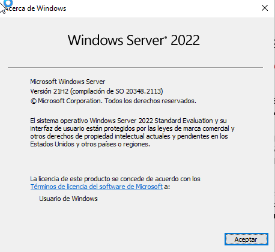

🔗 UT06 · Integración de sistemas
{kind=link}
Resultado de aprendizaje y criterios de evaluación
RA6. Integra sistemas operativos libres y propietarios, justificando y garantizando su interoperabilidad.
Criterios de evaluación:
a) Se ha identificado la necesidad de compartir recursos en red entre diferentes sistemas operativos. b) Se han establecido niveles de seguridad para controlar el acceso del cliente a los recursos compartidos en red. c) Se ha comprobado la conectividad de la red en un escenario heterogéneo. d) Se ha descrito la funcionalidad de los servicios que permiten compartir recursos en red. e) Se han instalado y configurado servicios para compartir recursos en red. f) Se ha comprobado el funcionamiento de los servicios instalados. g) Se ha trabajado en grupo para acceder a sistemas de archivos e impresoras en red desde equipos con diferentes sistemas operativos. h) Se ha documentado la configuración de los servicios instalados.
1. Escenarios heterogéneos: por qué hay que integrar sistemas distintos
Un escenario heterogéneo es aquel en el que conviven, en la misma red, equipos con sistemas operativos y arquitecturas diferentes: servidores Linux, estaciones Windows, dispositivos móviles, sistemas embebidos. Esta heterogeneidad no es un accidente pasajero sino una condición estructural del sector, impulsada por tres factores (criterio a: identificar la necesidad de compartir recursos entre sistemas distintos):
- Diversidad tecnológica. Cada organización elige el sistema operativo que mejor se adapta a cada tarea: Windows para ofimática y Active Directory, Linux para servidores y contenedores, macOS para diseño, sistemas embebidos para IoT.
- Movilidad y dispositivos conectados. Portátiles, tablets y móviles ejecutan sistemas operativos distintos entre sí y necesitan acceder a los mismos recursos compartidos que un puesto de escritorio.
- Computación en la nube. Los proveedores cloud operan sobre infraestructuras heterogéneas, y garantizar la interoperabilidad entre sistemas operativos es requisito para que la migración a la nube sea transparente para el usuario.
Gestionar estos escenarios exige que un administrador de sistemas domine mecanismos de intercambio de archivos y recursos que funcionen independientemente del sistema operativo de origen y de destino. Los dos protagonistas de esta unidad son NFS (nativo de Unix/Linux) y Samba (implementación libre del protocolo de Windows), acompañados por el paradigma más reciente de compartición de entornos completos: los contenedores.
Sin nada especial que instalar
Para trabajar con Samba y NFS en un entorno Windows no es necesario instalar software de terceros: basta con activar las características correspondientes desde Panel de control → Programas y características → Activar o desactivar las características de Windows (cliente NFS) o simplemente acceder por red (SMB, integrado de fábrica). En Linux, en cambio, sí hay que instalar los paquetes del servicio: sudo apt-get install samba o sudo apt-get install nfs-kernel-server, y editar los ficheros de configuración correspondientes (/etc/samba/smb.conf, /etc/exports).
2. NFS: Network File System
NFS es el protocolo de sistema de archivos en red estándar en el mundo Unix/Linux. Su objetivo es que varios equipos de una red local accedan a archivos y directorios compartidos como si fuesen locales, centralizando el almacenamiento y reduciendo la necesidad de espacio en los clientes. La arquitectura se divide siempre en dos papeles (criterio d: describir la funcionalidad del servicio):
- Un servidor NFS, que almacena físicamente los datos y los exporta.
- Uno o varios clientes, cuyos usuarios montan esos directorios exportados como si fueran una unidad local más.
NFS está incluido de serie en la práctica totalidad de distribuciones Linux y en macOS. Windows 10/11 permite trabajar de forma nativa con NFS en sus ediciones Pro y Enterprise.
Ventajas de NFS
| Ventaja | Explicación |
|---|---|
| Acceso centralizado | Se evita la duplicidad de la información en distintos puntos de la red. |
| Integridad de datos | Las operaciones de escritura deben concluir antes de continuar, incluida la actualización de directorios. |
| Perfiles de usuario centralizados | El directorio /home puede residir en el servidor, permitiendo acceder a los datos desde cualquier punto de la red. |
| Compartición de dispositivos completos | Unidades ópticas, discos externos o memorias flash pueden compartirse enteras, reduciendo costes. |
| Seguridad (desde NFSv4) | Incorpora Kerberos y listas de control de acceso (ACL). |
| Rendimiento y escalabilidad | Soporta grandes volúmenes de datos y acceso concurrente de múltiples usuarios. |
Configuración del servidor NFS (Ubuntu Server)
El proceso de instalación y puesta en marcha sigue siempre los mismos pasos (criterio e: instalar y configurar servicios para compartir recursos en red):
- Instalar el paquete
nfs-kernel-server, que arrastra como dependenciasnfs-common(programas cliente/servidor) yrpcbind(esencial para que clientes y servidores se localicen en un escenario heterogéneo). - Crear la carpeta a compartir y ajustar sus permisos y propietarios para que los clientes no tengan problemas de acceso.
- Editar
/etc/exports, el fichero donde se declara qué carpetas se exportan, con qué clientes y con qué opciones. Sintaxis general:
ruta cliente_1(opciones) cliente_2(opciones) ...
El cliente puede indicarse mediante IP, nombre DNS, comodines (*, ?), rangos de IP o netgroups (si existe un servidor NIS).
| Opción | Descripción |
|---|---|
rw |
Permite lectura y escritura en el volumen NFS. |
ro |
Permite solo lectura. |
sync |
No responde a peticiones antes de escribir los cambios pendientes en disco (predeterminada). |
async |
Mejora el rendimiento a costa de arriesgar corrupción de archivos. |
subtree_check / no_subtree_check |
Verifica (o no) los permisos de los directorios superiores. |
root_squash |
Trata al usuario root remoto como un usuario más, evitando que mantenga privilegios (predeterminada). |
no_root_squash |
Deshabilita el root_squash anterior. |
- Reiniciar el servicio NFS cada vez que se modifique
/etc/exportspara que los cambios surtan efecto. - Verificar creando un archivo de prueba en la carpeta compartida y comprobando que es accesible desde los clientes (criterio f: comprobar el funcionamiento de los servicios instalados).
Clientes NFS
Ubuntu Desktop: instalar nfs-common y rpcbind, crear un punto de montaje local, montar con mount y comprobar con df y mount. Para que el montaje sea persistente entre reinicios se añade la entrada correspondiente en /etc/fstab (file systems table), donde se declaran los volúmenes que se montan automáticamente al arrancar.
Windows 11: puede activarse el cliente NFS nativo desde las características de Windows. El acceso puntual se realiza abriendo el explorador de archivos y escribiendo \\IP-del-servidor en la barra de direcciones. Para automatizar el montaje al inicio se puede crear un script en la carpeta especial Inicio (accesible con Win + R → shell:startup) que ejecute el montaje con la opción -o anon (usuario anónimo) y asigne una letra de unidad.
3. Samba: interoperabilidad con el mundo Windows
Samba es la implementación libre por excelencia del protocolo SMB/CIFS de Microsoft, y resuelve el problema inverso a NFS: permite que sistemas Unix/Linux compartan archivos e impresoras con sistemas Windows y viceversa, de forma transparente para el usuario final.
| Protocolo | Descripción |
|---|---|
| SMB (Server Message Block) | Conjunto de reglas de comunicación para compartir archivos, impresoras y otros recursos en red; desarrollado originalmente por IBM y mejorado por Microsoft. |
| CIFS (Common Internet File System) | Evolución de SMB con autenticación de usuarios y acceso seguro a recursos a través de Internet. |
Componentes de Samba
| Herramienta | Función |
|---|---|
smbd |
Demonio del servidor de archivos: gestiona los recursos compartidos y autentica usuarios. |
nmbd |
Servidor de nombres NetBIOS (resolución de nombres, similar a un servidor WINS). |
smbclient |
Cliente de línea de comandos, similar a un cliente FTP, para acceder a recursos compartidos remotos. |
mount.cifs |
Permite montar recursos CIFS como si fueran un sistema de archivos local en Linux. |
| Winbind | Integra Samba con servicios de nombres como Active Directory. |
| Comando | Descripción |
|---|---|
sudo apt-get install samba |
Instala el servidor Samba. |
smbstatus |
Muestra el estado del servidor de archivos y de nombres. |
testparm |
Verifica que smb.conf no tenga errores de sintaxis. |
pdbedit -w -L |
Lista los usuarios dados de alta en Samba. |
smbclient //servidor/recurso -U usuario |
Accede a un recurso compartido desde línea de comandos. |
smbtar |
Realiza copias de seguridad de recursos Samba. |
Niveles de seguridad de acceso (criterio b)
El fichero /etc/samba/smb.conf se organiza en secciones entre corchetes ([global] para parámetros generales, [printers] para impresoras, [homes] para compartir automáticamente los directorios personales). Para compartir una carpeta nueva se crea una sección con el nombre del recurso. Existen, en la práctica, dos niveles de seguridad de acceso claramente diferenciados:
=== "Acceso completo (público)"
Cualquier usuario, incluidos invitados, puede acceder al recurso.
```ini
[compartir]
path = /home/compartir
browseable = yes
guest ok = yes
writable = yes
create mode = 0777
directory mode = 0777
```
=== "Acceso restringido (por grupo)"
Solo los miembros de un grupo determinado, con usuario y contraseña, pueden acceder.
```ini
[restringido]
path = /home/restringido
browseable = yes
guest ok = no
valid users = @restringido
create mode = 0770
directory mode = 0770
writable = yes
```
| Parámetro | Comentario |
|---|---|
browseable |
Indica si el recurso es visible al explorar la red. |
guest ok |
Permite (o no) el acceso a usuarios anónimos. |
valid users |
Lista de usuarios (o @grupo) con permiso de acceso. |
read only / writable |
Controla si el recurso admite escritura. |
force user / force group |
Fuerza el propietario de los ficheros creados. |
Para dar de alta un usuario Samba con acceso restringido, primero debe existir como usuario del sistema (useradd), y después se registra en la base de datos de Samba con smbpasswd -a usuario, añadiéndolo al grupo correspondiente (usermod -aG restringido usuario).
Comprobar siempre antes de reiniciar
Antes de reiniciar el servicio tras editar smb.conf, es imprescindible ejecutar testparm: un error de sintaxis en el fichero puede impedir que el servicio arranque y dejar sin acceso a todos los clientes.
Acceso desde los clientes
- Windows: se accede escribiendo la IP del servidor en el explorador de archivos (
\\IP), introduciendo usuario y contraseña si el recurso es restringido. - Linux (línea de comandos):
smbclient //servidor/recurso --user=usuario, con un funcionamiento similar a un cliente FTP (put,get,ls,cd,quit). - Linux (gráfico): con el paquete
cifs-utilsse puede montar el recurso en una carpeta local (mount -t cifs), o acceder desde Nautilus escribiendosmb://IP-del-servidoren la barra de direcciones (Ctrl+L).
4. Comprobación de la conectividad en un escenario heterogéneo
Antes de instalar cualquier servicio de compartición hay que verificar que la red permite la comunicación entre los distintos sistemas operativos (criterio c). Las comprobaciones básicas, válidas en cualquier escenario heterogéneo, son:
| Comprobación | Windows | Linux |
|---|---|---|
| Configuración IP | ipconfig /all |
ip a |
| Alcance (ping) | ping IP_destino |
ping IP_destino |
| Resolución de nombres | nslookup host |
nslookup host / dig |
| Puertos abiertos | Test-NetConnection -Port 445 |
nc -zv IP 445 |
| Recursos visibles en red | Explorador → Red | smbclient -L //servidor |
| Servicio | Puerto | Protocolo |
|---|---|---|
| SMB/CIFS (Samba) | 445 (y 139 legacy) | TCP |
| NFS | 2049 | TCP/UDP |
| rpcbind (NFS) | 111 | TCP/UDP |
| SSH (administración remota) | 22 | TCP |
Trabajo en grupo entre sistemas operativos distintos
El criterio (g) de esta unidad pide expresamente trabajar en grupo para acceder a sistemas de archivos e impresoras en red desde equipos con sistemas operativos diferentes. En la práctica de la unidad, un compañero con Windows y otro con Ubuntu deben comprobar de forma conjunta el acceso al mismo recurso NFS y Samba, documentando el proceso desde ambos puntos de vista.
5. Clustering: agrupar equipos para ganar disponibilidad
Un clúster es un conjunto de equipos (nodos) unidos mediante hardware y software para comportarse como un único sistema, con el objetivo de mejorar disponibilidad, rendimiento y tolerancia a fallos.
| Tipo de clúster | Objetivo |
|---|---|
| Alta disponibilidad (HA) | Garantizar que el servicio sigue disponible aunque falle un nodo (bases de datos críticas). |
| Alto rendimiento (HPC) | Resolver cálculos complejos mediante paralelismo (simulaciones científicas). |
| Alta eficiencia (HT) | Maximizar el número de tareas independientes procesadas por unidad de tiempo. |
| Balanceo de carga | Repartir peticiones entre nodos evitando sobrecargar uno solo (servidores web). |
| Almacenamiento | Gestionar grandes volúmenes de datos con redundancia (NAS, SAN). |
Componentes de un clúster
- Nodos: uno o varios nodos maestros (coordinan tareas, asignan recursos) y nodos de trabajo (workers) que ejecutan las tareas asignadas.
- Red de interconexión de alta velocidad y baja latencia entre nodos.
- Almacenamiento compartido, mediante sistemas de archivos distribuidos (NFS, Ceph, Lustre) o SAN/NAS.
- Gestor de trabajos que asigna y prioriza tareas (Slurm, Apache YARN).
- Herramientas de monitorización (Nagios, Prometheus) y fuente de alimentación redundante (SAI).
Quórum: evitar el "cerebro dividido"
Cuando los nodos de un clúster pierden la comunicación entre sí, cada uno puede creer que el otro ha fallado y auto-asignarse como principal, generando una situación de cerebro dividido (split brain) con riesgo de pérdida de datos. El quórum resuelve este problema mediante un sistema de votación:
| Modelo de quórum | Aplicable a |
|---|---|
| Mayoría de nodos | Número impar de nodos: cada uno aporta un voto. |
| Mayoría de nodos y disco (testigo) | Número par de nodos: un disco compartido aporta el voto de desempate. |
| Mayoría de recurso compartido de archivos y nodos | Igual que el anterior, sustituyendo el disco por un recurso de archivos. |
| Sin mayoría (solo disco) | El disco compartido es suficiente para formar el quórum. |
{kind=link}
Clúster de conmutación por error (failover)
Un clúster de conmutación por error es un grupo de servidores independientes que trabajan juntos para aumentar la disponibilidad de un rol: si un nodo falla, otro asume el servicio automáticamente (conmutación por error). Windows Server implementa, además, Volúmenes compartidos de clúster (CSV), un espacio de nombres uniforme que los roles en clúster usan para acceder al almacenamiento compartido de todos los nodos con una interrupción mínima del servicio.
El proceso típico de despliegue en Windows Server incluye: promover un controlador de dominio, instalar el rol de servidor de destino iSCSI para crear los discos compartidos (uno pequeño para el quórum, otro mayor para los datos), unir los nodos al dominio y asociarles esos discos, y finalmente validar la configuración y crear el clúster desde el asistente de Failover Cluster Manager.
6. Almacenamiento en red: DAS, NAS, SAN y sistemas de archivos distribuidos
| Modelo | Conexión | Ventaja | Desventaja |
|---|---|---|---|
| DAS (Direct Attached Storage) | Directa al servidor (SATA, SAS, USB) | Más barato, sin cuello de botella de red | Si el servidor falla, los datos no están disponibles |
| NAS (Network Attached Storage) | Red LAN, protocolos NFS/CIFS/FTP | Balanceo de carga y tolerancia a fallos a bajo coste | El tráfico comparte la LAN de los usuarios |
| SAN (Storage Area Network) | Red dedicada de alta velocidad (iSCSI, fibra) | Los discos siguen disponibles aunque falle un servidor; no satura la LAN | Mayor coste y complejidad de despliegue |
iSCSI (Internet SCSI) permite presentar un dispositivo de almacenamiento remoto como si fuera un disco local a través de una red IP convencional, mediante un iniciador (initiator) en el cliente y un destino (target) en el servidor de almacenamiento. Es la tecnología habitual para proporcionar discos compartidos a los nodos de un clúster.
Los sistemas de archivos distribuidos (DFS) permiten gestionar archivos de forma distribuida entre varios nodos de la red, ofreciendo una vista unificada de las carpetas compartidas independientemente de dónde residan físicamente. El rol DFS de Windows Server aporta:
- Namespaces: espacios de nombres lógicos que agrupan recursos de varios servidores bajo una única ruta.
- Replicación de datos entre servidores, mejorando disponibilidad y redundancia.
- Consistencia de datos entre las réplicas del espacio de nombres.
TrueNAS CORE
TrueNAS CORE (antes FreeNAS) es un sistema operativo de almacenamiento libre basado en el sistema de archivos ZFS, que aporta integridad de datos, instantáneas eficientes y compresión. Permite almacenamiento unificado (archivos, bloques y objetos), alta disponibilidad y una interfaz web intuitiva, e integra sin problemas con Samba y NFS para exponer sus recursos a un dominio Windows o a clientes Linux.
7. Contenedores: compartir el mismo entorno de ejecución
Un contenedor es una unidad ligera y portátil que empaqueta una aplicación junto con todas sus dependencias (librerías, binarios, configuración) en un entorno aislado, compartiendo el núcleo del sistema operativo anfitrión en lugar de virtualizar hardware completo, como haría una máquina virtual. Esta diferencia de nivel de virtualización es la que hace que los contenedores arranquen casi al instante y consuman muchos menos recursos.
| Máquina virtual | Contenedor | |
|---|---|---|
| Virtualización | Hardware completo, SO propio por instancia | A nivel de sistema operativo, núcleo compartido |
| Arranque | Minutos | Segundos |
| Peso | GB | MB |
| Aislamiento | Muy alto | Alto, pero comparte el kernel del host |
Los contenedores resuelven el clásico problema de "en mi máquina funciona": al empaquetar la aplicación con sus dependencias exactas, el mismo contenedor se ejecuta igual en el portátil de un desarrollador, en un servidor de pruebas o en producción.
Docker
Docker, nacido en 2013, es la plataforma de contenedores más extendida. Se apoya en cuatro objetos principales:
| Objeto | Descripción |
|---|---|
| Imagen | Plantilla de solo lectura, construida por capas, con todo lo necesario para ejecutar la aplicación. |
| Contenedor | Instancia en ejecución de una imagen; se puede crear, iniciar, detener o eliminar. |
| Volumen | Mecanismo de persistencia de datos más allá del ciclo de vida del contenedor. |
| Red | Define cómo se comunican los contenedores entre sí y con el exterior (bridge, host, overlay, macvlan, none). |
| Comando | Descripción |
|---|---|
docker run -d --name web -p 81:80 nginx |
Crea y ejecuta un contenedor en segundo plano, mapeando el puerto 81 del host al 80 del contenedor. |
docker ps / docker ps -a |
Lista contenedores en ejecución / todos, incluidos los detenidos. |
docker images |
Lista las imágenes descargadas localmente. |
docker build -t imagen . |
Construye una imagen a partir de un Dockerfile. |
docker exec -it contenedor bash |
Abre una shell interactiva dentro de un contenedor en marcha. |
docker volume create / docker network create |
Crea un volumen o una red gestionados por Docker. |
{kind=link}
Un Dockerfile define, instrucción a instrucción, cómo se construye una imagen personalizada por capas: FROM (imagen base, obligatoria y primera instrucción), RUN (ejecuta un comando y genera una capa), COPY/ADD (copian archivos al contenedor), EXPOSE (declara un puerto), ENV (variables de entorno), VOLUME (declara un volumen) y CMD/ENTRYPOINT (comando por defecto al arrancar).
Ejemplo mínimo: nginx sobre Alpine
docker run -d --name web01 -p 81:80 nginx:alpine
docker ps
docker exec -it web01 sh
curl http://localhost:81
Podman: la alternativa sin daemon
Podman ofrece una interfaz de comandos compatible con Docker pero sin depender de un demonio centralizado en segundo plano, lo que reduce la superficie de ataque y permite ejecutar contenedores en modo rootless (sin privilegios de administrador). Es la opción por defecto en Red Hat Enterprise Linux y distribuciones derivadas.
8. Kubernetes: orquestación de contenedores
Cuando el número de contenedores crece y hay que mantenerlos disponibles, escalarlos y actualizarlos sin interrupciones, aparece la necesidad de un orquestador. Kubernetes (K8s) es el orquestador de contenedores más popular, originado en Google en 2014 y cedido después a la Cloud Native Compute Foundation (CNCF).
| Componente | Función |
|---|---|
| Cluster | Conjunto de nodos gestionados por Kubernetes. |
| Node | Máquina física o virtual donde se ejecutan los pods. |
| Pod | Unidad mínima de despliegue: uno o varios contenedores que comparten red y almacenamiento. |
| Deployment | Declara cuántas réplicas de un pod deben existir y qué imagen usar; Kubernetes mantiene ese estado. |
| Service | Expone un conjunto de pods con una IP y nombre DNS estables (ClusterIP, NodePort, LoadBalancer). |
| Namespace | Espacio virtual para aislar recursos (desarrollo, pruebas, producción) dentro de un mismo clúster. |
Comando kubectl |
Descripción |
|---|---|
kubectl get pods |
Lista los pods del clúster. |
kubectl apply -f manifiesto.yaml |
Aplica un manifiesto para crear o actualizar recursos. |
kubectl scale deployment app --replicas=3 |
Cambia el número de réplicas de un deployment. |
kubectl logs pod |
Muestra los registros de un contenedor. |
kubectl exec -it pod -- sh |
Ejecuta un comando dentro de un contenedor del pod. |
Un manifiesto es un fichero YAML declarativo: se describe el estado deseado (por ejemplo, "3 réplicas de esta imagen") y Kubernetes se encarga de mantenerlo, sustituyendo pods que fallan y repartiendo la carga entre nodos.
apiVersion: apps/v1
kind: Deployment
metadata:
name: web-app
spec:
replicas: 3
selector:
matchLabels:
app: web
template:
metadata:
labels:
app: web
spec:
containers:
- name: web
image: nginx:alpine
ports:
- containerPort: 80
Minikube permite crear un clúster de Kubernetes de un solo nodo en un entorno local, ideal para aprender y probar manifiestos antes de desplegar en un clúster real, con un dashboard web incluido para visualizar los recursos gráficamente.
9. Proxmox VE: virtualización y contenedores en un mismo entorno
Proxmox Virtual Environment es una plataforma de virtualización libre, basada en Debian, que combina en una sola interfaz web dos tecnologías: contenedores LXC y máquinas virtuales KVM. Ofrece gestión centralizada, creación de clústeres para alta disponibilidad, almacenamiento integrado (local, NFS, CIFS, iSCSI) y copias de seguridad de VMs y contenedores.
{kind=link}
Tras la instalación, Proxmox indica en consola la URL de acceso (https://IP:8006). El árbol del Centro de datos, a la izquierda de la interfaz, agrupa el nodo con sus almacenamientos (local, local-lvm, almacenamiento en red); en el centro se muestra el consumo de CPU, memoria y disco, y en la parte inferior el registro de tareas ejecutadas.
Comando pvecm |
Descripción |
|---|---|
pvecm create <nombre> |
Crea un nuevo clúster Proxmox. |
pvecm add <nodo> |
Añade un nodo al clúster. |
pvecm nodes |
Lista los nodos del clúster y su estado. |
pvecm status |
Muestra el estado detallado del clúster. |
| Formato de disco | Plataforma de origen | Compatible en Proxmox |
|---|---|---|
| RAW | Genérico | Sí |
| QCOW2 | QEMU (nativo de Proxmox) | Sí, con instantáneas y compresión |
| VMDK | VMware | Sí (migración) |
| VHD/VHDX | Hyper-V | Sí (migración) |
| VDI | VirtualBox | No, requiere conversión previa |
10. Documentación de los servicios instalados
El último criterio de evaluación de esta unidad (h) exige documentar la configuración de los servicios instalados. En un escenario de integración de sistemas, un buen registro debe incluir, como mínimo:
- Direcciones IP y nombres de host de servidor y clientes.
- Rutas de las carpetas compartidas y opciones de exportación (NFS) o de la sección
smb.conf(Samba). - Usuarios y grupos creados, con el nivel de acceso asignado a cada recurso.
- Capturas de las comprobaciones de conectividad y del acceso efectivo desde cada sistema operativo cliente.
- Comandos ejecutados y resultado de cada prueba, para que la configuración sea reproducible por otra persona del equipo.
Síntesis de la unidad
Un centro educativo tiene un servidor Ubuntu que debe compartir dos recursos: una carpeta de material de clase, accesible por todo el alumnado desde Windows y Linux (Samba con acceso completo), y una carpeta de profesorado, restringida a un grupo concreto (Samba con valid users = @profesorado), además de exportar por NFS los perfiles de usuario del propio servidor para que estén disponibles en cualquier equipo Linux del aula. Todo el proceso —instalación, configuración, niveles de acceso, comprobación de conectividad y pruebas desde ambos sistemas operativos— queda documentado paso a paso, cumpliendo los ocho criterios de evaluación de la RA6.
Para profundizar
Esta unidad recopila y reorganiza el material de clase de Administración de Sistemas Operativos sobre interoperabilidad NFS/Samba, clustering, almacenamiento en red y virtualización con contenedores (Docker, Podman, Kubernetes y Proxmox VE). El resto de enlaces de referencia, manuales oficiales y vídeos citados a lo largo del temario está recopilado en la página de Recursos. Para Proxmox, la colección tteck/Proxmox reúne scripts de automatización muy usados por la comunidad; para Docker/Kubernetes, los cursos de iesgn son una referencia completa y abierta.
🔗 UT06 · Integración de sistemas
Teoría
NFS y Samba
2.1 Integración de sistemas (NFS-Samba)
CONTENIDOS
ESCENARIOS HETEROGÉNEOS NFS (NETWORK FILE SYSTEM) NFS (CLIENTE) SAMBA SAMBA: ACCESO COMPLETO SAMBA: ACCESO RESTRINGIDO
ESCENARIOS HETEROGÉNEOS
Los sistemas operativos, la diversidad y la complejidad de estos son elementos inherentes que han evolucionado con la expansión de la tecnología informática. Los escenarios heterogéneos se manifiestan cuando múltiples plataformas y arquitecturas coexisten en un entorno informático. Este fenómeno puede abarcar desde la coexistencia de sistemas operativos diversos hasta la integración de dispositivos con arquitecturas de hardware diferentes.
La gestión efectiva de estos escenarios se ha convertido en una habilidad esencial para profesionales de la informática. Esto implica la capacidad de integrar, administrar y optimizar eficientemente la operación de sistemas diversos, garantizando la coexistencia armoniosa y la interoperabilidad.
ESCENARIOS HETEROGÉNEOS
Estos escenarios heterogéneos ha sido impulsada los siguientes factores: Diversidad Tecnológica: Con el surgimiento de nuevas tecnologías y la evolución constante de la informática, las organizaciones y usuarios a menudo optan por utilizar una variedad de sistemas operativos que se adapten mejor a sus necesidades específicas. Desde entornos Windows y Linux hasta macOS y sistemas embebidos, la diversidad tecnológica es una constante. Movilidad y Dispositivos Conectados: Actualmente la movilidad y la conectividad son elementos clave. Los usuarios interactúan con una variedad de dispositivos, como teléfonos inteligentes, tabletas, computadoras portátiles y sistemas embebidos, cada uno ejecutando sistemas operativos distintos. La necesidad de compartir recursos entre estos dispositivos ha llevado a la creación de entornos heterogéneos. Computación en la Nube: La adopción generalizada de la computación en la nube ha introducido nuevos desafíos y oportunidades. Los servicios en la nube a menudo operan en una infraestructura heterogénea para atender a diversas necesidades de los clientes. La interoperabilidad entre sistemas operativos es esencial para garantizar una transición fluida a través de entornos en la nube.
ESCENARIOS HETEROGÉNEOS
Las siguientes herramientas desempeñan un papel crucial en entornos informáticos heterogéneos al facilitar el intercambio de archivos y recursos entre sistemas con diferentes arquitecturas y sistemas operativos: Samba: Compatibilidad con Windows y Linux: Samba es una implementación del protocolo SMB/CIFS que permite a sistemas no-Windows compartir archivos e impresoras con sistemas Windows y viceversa. Integración con Active Directory: Facilita la integración de sistemas basados en Linux en un entorno de red con Active Directory, permitiendo la autenticación y el acceso a recursos compartidos de manera consistente. Interoperabilidad: Al proporcionar un puente entre sistemas operativos diversos, Samba mejora la interoperabilidad, permitiendo a los usuarios acceder y compartir recursos de manera transparente, independientemente del sistema que estén utilizando. NFS: Estándar en entornos Unix/Linux: Protocolo de sistema de archivos de red ampliamente utilizado en sistemas Unix y Linux. Facilita el acceso transparente a archivos remotos como si estuvieran en el sistema local, permitiendo una integración eficiente entre sistemas homogéneos y heterogéneos. Rendimiento: Rendimiento eficiente en entornos de red, lo que lo hace ideal para compartir grandes volúmenes de datos entre sistemas. Esto es especialmente beneficioso en entornos donde se manejan grandes conjuntos de datos distribuidos en varios sistemas. Escalabilidad: Es escalable y permite el acceso concurrente a los archivos compartidos, lo que lo hace apto para entornos empresariales donde múltiples usuarios pueden acceder a los mismos recursos al mismo tiempo.
ESCENARIOS HETEROGÉNEOS
Para utilizar Samba y NFS en un entorno Windows, no debe tener nada especial instalado. Solo realizar algunas configuraciones y asegurarse de que los servicios necesarios estén activados: Configuración Aplicaciones Programas y características Activar o desactivar las características de Windows
ESCENARIOS HETEROGÉNEOS
Para utilizar Samba y NFS en un entorno Linux, es necesario instalar los paquetes correspondientes y realizar algunas configuraciones: Samba sudo apt-get install samba sudo nano /etc/samba/smb.conf sudo service smbd restart NFS: sudo apt-get install nfs-kernel-server sudo nano /etc/exports sudo service nfs-kernel-server restart
NFS (NETWORK FILE SYSTEM)
NFS (sistemas de archivos en red) que se utiliza en redes de área local para crear un sistema de archivos distribuido. El objetivo de NFS es que varios usuarios (o programas) de una red local puedan acceder a archivos y directorios compartidos como si fuesen locales. De esta forma, se puede centralizar la capacidad de almacenamiento de la red, pudiendo ser más reducida en los clientes. Para lograrlo, la instalación de NFS se divide en dos partes: Un equipo que actúa como servidor y que almacena los archivos compartidos. Uno o varios equipos que actúan como clientes y cuyos usuarios accederán a los archivos compartidos por el servidor como si fuesen locales. Actualmente, el protocolo NFS está incluido en la mayoría de las distribuciones Linux, y en las diferentes versiones del sistema operativo OSX de Apple. Windows 10 permite trabajar de forma nativa con NFS, con las versiones Enterprise y Pro.
NFS (NETWORK FILE SYSTEM)
Ventajas de implementar NFS en una red local: Facilitar el acceso centralizado a la información, se evita la duplicidad de la misma en diferentes puntos de la red. Obliga a que todas las operaciones de escritura relacionadas con una actualización concluyan antes de continuar (incluida la actualización de la estructura de directorios). Así se asegura la integridad de los datos. Permite almacenar todo el perfil de los usuarios en el servidor (su directorio /home), de modo que cualquier usuario podrá acceder a sus datos desde cualquier lugar de la red. Permite compartir dispositivos de almacenamiento completos (como unidades ópticas, discos externos, memorias flash, etc), lo que facilita la reducción de costes en este tipo de dispositivos a la vez que mejora su aprovechamiento. Desde la versión 4, se incluyen características de seguridad Kerberos y Listas de Control de Acceso (ACL – Access Control List), entre otras. Capacidad de manejar grandes volúmenes de datos. Esto lo hace ideal para entornos que requieren transferencias de datos muy rápidas y eficientes.
NFS (NETWORK FILE SYSTEM)
Configurar servidor NFS para lo cual hay que seguir los siguientes pasos: Instalación de NFS en Ubuntu Server: Crear la carpeta o las carpetas que aún no existan y configurar los permisos necesarios. Exportar el contenido de las carpetas. Reiniciar el servicio NFS. Crear un archivo en una de las carpetas compartidas para comprobar que es accesible desde los clientes.
NFS (NETWORK FILE SYSTEM)
- Instalación de NFS en Ubuntu Server: Actualizar completamente el sistema. Al ser un server es recomendable tener una dirección estática. Instalar paquete: nfs-kernel-server. Su instalación provoca que se instalen, a modo de dependencias, dos paquetes más: nfs-common, que contiene los programas que nos permitirán usar NFS, tanto en el lado cliente como en el lado servidor. rpcbind, esencial para la coordinación eficiente entre clientes y servidores NFS en una red heterogénea. Asegura que los clientes puedan localizar y comunicarse con los servidores NFS, independientemente de la configuración específica del sistema.
NFS (NETWORK FILE SYSTEM)
2 Crear la carpeta o las carpetas que aún no existan y configurar los permisos necesarios. En este ejemplo crearemos el directorio /yeraymnfs como no queremos que los usuarios experimenten problemas para acceder a los datos, también cambiaremos el nombre del usuario y grupo propietarios de la carpeta, para que no sean propiedad de nadie y modificaremos los permisos de acceso, para que todos los usuarios puedan llevar a cabo cualquier acción sobre ella.
NFS (NETWORK FILE SYSTEM)
3 Exportar el contenido de las carpetas Debemos editar el archivo /etc/exports. Este es el archivo donde se indican a NFS las carpetas que vamos a compartir (exportar, en la terminología NFS). Cada carpeta exportada debe estar en una línea diferente de este archivo, aunque una línea muy larga puede continuarse en la línea siguiente poniendo al final una barra invertida (‘\’). Sintaxis:
ruta cliente_1(opciones) cliente_2(opciones) …
NFS (NETWORK FILE SYSTEM)
Cada ruta que se va a compartir tiene dos partes: La primera identifica al ordenador cliente y podemos usar: Una dirección IP o un nombre DNS. Caracteres comodín para representar todo el nombre del cliente o una parte. ‘?’ ‘*’ Intervalos de direcciones IP. netgropus. Cuando dispongamos de un servidor NIS en la red, podremos agrupar los usuarios en grupos. La segunda será una lista de opciones para compartir que se muestran a continuación:
NFS (NETWORK FILE SYSTEM)
| OPCIÓN | DESCRIPCIÓN |
|---|---|
| rw | Permite lectura y escritura en un volumen NFS |
| ro | Permite sólo lectura en un volumen NFS |
| wdelay | El servidor NFS no escribe en el disco si espera otra solicitud de forma inminente. Así se reducen los accesos a disco y mejora el rendimiento. Es la opción predeterminada, pero sólo funciona cuando usamos la opción sync. |
| no_wdelay | Deshabilita la característica anterior. |
| sync | Evita responder peticiones antes de escribir los cambios pendientes en disco. Es la opción predeterminada. |
| async | Deshabilita la característica anterior. Mejora el rendimiento a cambio de que exista el riesgo de corrupción en los archivos |
| subtree_check | NFS comprueba los directorios por encima de éste para verificar sus permisos y características. |
| no_subtree_check | Deshabilita la característica anterior |
| root_squash | Evita que los usuarios con privilegios administrativos los mantengan, sobre la carpeta compartida, cuando se conectan remotamente. En su lugar, se les trata como a un usuario remoto más. Es la opción predeterminada. |
| no_root_squash | Deshabilita el modo root_squash |
NFS (NETWORK FILE SYSTEM)
4 Reiniciar el servicio NFS. Siempre que hagamos cambios en el archivo /etc/exports, necesitaremos reiniciar el servicio para que éstos sean efectivos. 5 Crear un archivo en una de las carpetas compartidas para comprobar que es accesible desde los clientes
NFS (CLIENTES)
Ubuntu: Instalación de NFS en Ubuntu Desktop: Crear el punto de montaje, en la estructura de directorios local, donde se montarán las carpetas compartidas. Realizar el montaje y comprobarlo. Conseguir que las carpetas compartidas se monten automáticamente al arrancar el cliente. Windows : Instalar NFS Acceder de manera puntual Montar en los directorios de Windows
NFS (CLIENTES)
- Instalación de NFS en Ubuntu Desktop: Actualizar completamente el sistema. Instalar paquetes: nfs-common, que contiene los programas que nos permitirán usar NFS, tanto en el lado cliente como en el lado servidor. rpcbind, esencial para la coordinación eficiente entre clientes y servidores NFS en una red heterogénea. Asegura que los clientes puedan localizar y comunicarse con los servidores NFS, independientemente de la configuración específica del sistema.
NFS (CLIENTES)
2 Crear punto de montaje Lo primero que tendremos que decidir es en qué lugar del árbol de directorios del equipo cliente se montarán las carpetas compartidas por el servidor. Aunque hayamos dado permisos de escritura sobre las carpetas compartidas en la configuración NFS del servidor, no podremos escribir en ellas si no disponemos de permisos sobre los puntos de montaje donde se van a montar dichas carpetas en los clientes.
NFS (CLIENTES)
3 Realizar montaje y hacer comprobaciones Realizar el montaje de las carpetas compartidas y comprobarlo, para comprobar que todo ha ido bien, utilizaremos dos comandos: df y mount y también comprobaremos el contenido del punto de montaje:
NFS (CLIENTES)
4 Montar automáticamente las carpetas compartidas al iniciar el cliente Para ello hemos de editar el archivo /etc/fstab (file systems table) donde se guarda la información necesaria sobre los diferentes volúmenes que se montarán durante el arranque del sistema. Cuando implementamos una estructura NFS, como la que estamos viendo aquí, lo más probable es que queramos que los clientes monten las carpetas compartidas durante el arranque del sistema.
NFS (CLIENTES)
- Activar de NFS en Windows 11: Microsoft ha ido cambiando su enfoque con respecto al soporte que las diferentes versiones de Windows han ido teniendo de NFS, en la actualidad, no solo podemos usar NFS de forma nativa en la mayoría de las versiones de Windows, si no que además, se ha convertido en algo sencillo de configurar.
NFS (CLIENTES)
2 Acceder de manera puntual Si quieres acceder a los datos compartidos por el servidor NFS de un modo esporádico, solo tienes que abrir una nueva ventana del explorador de archivos y, en su barra de direcciones, escribir la dirección IP del servidor precedida de dos barras inclinadas (\).
NFS (CLIENTES)
3 Montar las carpetas NFS automáticamente durante el inicio de Windows El sistema operativo Windows dispone de una carpeta especial, llamada Inicio, donde podemos incluir archivos para que se ejecuten durante el arranque del equipo. Para abrirla, comenzaremos usando la combinación de teclas Windows + R, para obtener la ventana Ejecutar. En ella, escribiremos la siguiente orden:
NFS (CLIENTES)
A continuación se creará un script para automatizar el montaje de la unidad nfs: El argumento -o anon hará que la carpeta se monte usando un usuario anónimo. A continuación, se incluye la dirección IP del servidor y la ruta de la carpeta compartida. Por último, incluiremos la letra de unidad que usará Windows para referirse a la carpeta..
SAMBA
Samba es una herramienta fundamental en entornos heterogéneos, que facilita la interoperabilidad entre sistemas basados en Unix/Linux y sistemas operativos Windows. Es una implementación de código abierto del protocolo SMB y Microsoft Active Directory. Las características clave de Samba incluyen: Compartición de Archivos e Impresoras: Permite compartir directorios y archivos entre sistemas Windows y Unix/Linux. Los usuarios de Windows pueden acceder a estos recursos compartidos de manera transparente como si estuvieran en un entorno Windows nativo. Soporte para el Dominio de Windows: Actúa como un controlador de dominio para redes basadas en Windows, permitiendo la autenticación y la administración centralizada de usuarios y recursos. Integración con Active Directory: Puede integrarse con entornos de Active Directory, lo que facilita la coexistencia de sistemas Windows y sistemas basados en Samba en un mismo dominio. Compatibilidad con Protocolos Recientes: Samba ha evolucionado con el tiempo para admitir protocolos más recientes, como SMB 2.0 y SMB 3.0, mejorando así el rendimiento y la seguridad.
SAMBA
Protocolos en los que se basa: SMB (Server Message Block) conjunto de reglas de comunicación que permite compartir archivos, impresoras y otros recursos en una red, originalmente desarrollado por IBM y mejorado por Microsoft. CIFS (Common Internet File System): evolución y extensión del protocolo SMB, incluye funcionalidades avanzadas, como la autenticación de usuarios y la capacidad de acceder a recursos de manera segura a través de Internet.
SAMBA
Herramientas y servicios: Servidor de Archivos (smbd): Gestiona los recursos compartidos, autenticar usuarios y proporcionar servicios de archivos y directorios a través del protocolo SMB/CIFS. Cliente de Archivos (smbclient): Permite a los sistemas Linux acceder a recursos compartidos en sistemas Windows o en otros servidores Samba. Controlador de Dominio (samba): Puede funcionar como un controlador de dominio compatible con Active Directory. Esta función permite la integración de sistemas basados en Unix en entornos de red basados en Windows, incluida la administración centralizada de cuentas de usuario y políticas de seguridad. Cliente CIFS (mount.cifs): Proporciona la capacidad de montar recursos compartidos CIFS en sistemas Linux, permitiendo a estos sistemas acceder a recursos compartidos de archivos en servidores Samba o en sistemas Windows. Winbind: Este servicio permite la integración de Samba con servicios de nombres, como Active Directory, para facilitar la autenticación y la resolución de nombres de usuario y grupos. Nmbd (NetBIOS Name Server): Resolución de nombres NetBIOS, imita la funcionalidad de un servidor WINS permitiendo que los sistemas en una red Samba se comuniquen entre sí utilizando nombres de host en lugar de direcciones IP.
SAMBA
| Comando | Descripción |
|---|---|
| sudo apt-get install samba | Instala el paquete Samba en sistemas basados en Debian/Ubuntu. |
| sudo apt-get install swat | Instala SWAT (Samba Web Administration Tool). |
| sudo apt-get install samba-doc | Instala la documentación de Samba en sistemas basados en Debian/Ubuntu. |
| sudo apt-get install smbclient | Instala el cliente SMB para interacción con recursos compartidos. |
| smbd | Inicia el demonio del servidor de archivos Samba. |
| nmbd | Inicia el demonio del servidor de nombres NetBIOS Samba. |
| smbstatus | Muestra el estado del servidor de archivos y nombres. |
| testparm | Verifica la configuración de smb.conf en busca de errores. |
| pdbedit | Administra la base de datos de cuentas de usuario de Samba. |
| smbclient //servidor/nombre_recurso -U usuario | Inicia un cliente SMB para interactuar con un recurso compartido. |
| smbtar | Realizar copias de seguridad |
| nmblookup | Buscar nombres NetBIOS |
SAMBA
A continuación, procederemos a compartir dos carpetas con samba una de ellas tendrá acceso completo, es decir, que podrán acceder todos los usuarios, y la otra tendrá un acceso restringido solo para usuarios que pertenezcan al grupo restringido, es decir, que solo aquellos usuarios del grupo restringido podrán acceder a dicha carpeta. El primer paso será la instalación de samba y comprobar la versión:
SAMBA: ACCESO COMPLETO (SERVIDOR)
Creamos la carpeta que vamos a compartir mediante samba (por ejemplo: /home/compartir). También queremos dar acceso completo a la carpeta, por lo que cambiamos los permisos:
SAMBA: ACCESO COMPLETO (SERVIDOR)
A continuación, configuraremos el servicio mediante el archivo de configuración /etc/samba/smb.conf Antes de hacer ningún cambio en el archivo de configuración de samba es conveniente realizar una copia del archivo para poder retornar al estado anterior en caso de que hagamos una modificación incorrecta del archivo que impida el arranque del servicio.
SAMBA: ACCESO COMPLETO (SERVIDOR)
El archivo de configuración /etc/samba/smb.conf se divide en secciones identificadas por un nombre entre corchetes. Por defecto están las siguientes secciones: [global]: nos permite configurar los parámetros generales del servicio. [printers]: nos permite compartir impresoras. [homes]: permite compartir las carpetas home de cada usuario, para que cada usuario pueda acceder a su carpeta home por la red. Por defecto esta sección está comentada. Para compartir una carpeta debemos añadir una nueva sección. El nombre de la sección, será el nombre del recurso compartido. Ejemplo, si queremos compartir la carpeta /home/comun-profes y llamar al recurso compartido profes, debemos crear una sección llamada [profes].
SAMBA: ACCESO COMPLETO (SERVIDOR)
El parámetro workgroup nos indica el grupo de trabajo. Por defecto su valor es WORKGROUP. En el caso de que nuestro grupo de trabajo tenga otro nombre, debemos modificarlo.
SAMBA: ACCESO COMPLETO (SERVIDOR)
Añadimos al final del fichero /etc/samba/smb.conf el recurso que deseamos compartir: En este caso vamos a compartir una carpeta con acceso completo a ella por parte de cualquier usuario. Es importante dejar un espacio antes y después del igual.
SAMBA: ACCESO COMPLETO (SERVIDOR)
| OPCIÓN | COMENTARIO |
|---|---|
| [recurso] | Nombre del recurso compartido. |
| browseable | Indica si el recurso compartido será visible cuando se escanea la red, por ejemplo haciendo clic en 'Mis sitios de red' en Windows |
| comment | Proporciona información adicional sobre el recurso. |
| create mode | Especifica los permisos por defecto que tienen los ficheros creados. |
| directory mode | Especifica los permisos por defecto que tienen los directorios creados. |
| force user | Especifica el usuario propietario que tienen los ficheros y carpetas que se crean. |
| force group | Especifica el grupo propietario que tienen los ficheros y carpetas que se crean. |
| guest ok | Indica si se permite el acceso a usuarios anónimos. |
| path | Ruta local de la carpeta o impresora a compartir. |
| printable | Se debe poner YES, si no se hace asi no funcionarán las impresoras. |
| public | Indica si el directorio permite el acceso público. |
| read only | Indica que el directorio es solo lectura |
| valid users | Indica los usuarios que pueden acceder a la carpeta. Para añadir un grupo entonces hay que poner el nombre del grupo precedido de la @. |
| writable | Indica que se puede modificar el contenido de la carpeta. |
| write list | Indica los usuarios que pueden modificar el contenido. |
SAMBA: ACCESO COMPLETO (SERVIDOR)
Importante: después de editar el fichero /etc/samba/smb.conf, guardarlo y haber salido debemos ejecutar el siguiente comando para comprobar que no hay ningún error de sintaxis en el fichero: testparm. A continuación reiniciar el servicio.
SAMBA: ACCESO COMPLETO (CLIENTE)
Windows: Accedemos a la dirección IP del servidor
GNU/Linux: Antes de acceder debemos instalar el paquete samba para un cliente : smbclient
SAMBA: ACCESO COMPLETO (CLIENTE)
Para acceder a la carpeta compartida desde línea de comandos debemos ejecutar el comando smbclient seguido del nombre del recurso compartido: queremos acceder al recurso compartido llamado “compartir”. También podemos sustituir el nombre del servidor donde está el recurso compartido por su IP.
SAMBA: ACCESO COMPLETO (CLIENTE)
Una vez que accede a la carpeta compartida, es como un cliente de ftp. Podemos ejecutar los comandos típicos del ftp como put, get, ls, cd, etc... Para salir se utiliza el comando quit o el comando exit.
SAMBA: ACCESO COMPLETO (CLIENTE)
Como es un poco engorroso trabajar mediante línea de comandos con el recurso compartido, existe la posibilidad de trabajar en forma gráfica montando las unidades de red en carpetas de nuestro sistema como si se tratara de una carpeta local. Para poder montar un directorio Samba necesitamos tener instalado el paquete: cifs-utils Creamos la carpeta donde se va a realizar el montaje y realizamos el montaje del recurso que comparte el servidor en la carpeta creada a tal efecto /mnt/compartir con el sistema de archivos tipo cifs:
SAMBA: ACCESO COMPLETO (CLIENTE)
Para montar la carpeta compartida de forma permanente, editamos el fichero /etc/fstab y añadimos la línea resaltada:
Para acceder a la carpeta compartida de forma gráfica, abrimos el gestor de ficheros para el escritorio GNOME (Nautilus) y en la barra de direcciones pulsamos Ctrl + L y escribimos en la barra de direcciones: smb://IP-del-servidor
SAMBA: ACCESO RESTRINGIDO (SERVIDOR)
Vamos a crear una carpeta compartida, a la que se tendrá acceso mediante un usuario y contraseña. Creamos un grupo (restringido) donde vamos a añadir un usuario posteriormente. Este será el grupo que tendrá acceso al recurso compartido y solo los miembros de ese grupo tendrán permiso de acceso al recurso compartido Creamos la carpeta que vamos a compartir: /home/restringido.
SAMBA: ACCESO RESTRINGIDO (SERVIDOR)
Cambiamos el grupo de usuarios de la carpeta creada de forma que pertenezca al grupo restringido (chgrp) Cambiamos los permisos de la carpeta de forma que tenga todos los permisos el propietario y el grupo restringido
SAMBA: ACCESO RESTRINGIDO (SERVIDOR)
Añadir al final del fichero de configuración la carpeta a compartir, en este caso debemos de hacer los siguientes cambios en la configuración de compartir: guest ok = no : No queremos que se conecte usuarios invitados create mode y directory mode = 0770: Todos los permisos para propietario y grupo valid users = @grupo : Indicamos que los usuarios válidos son los que están en el grupo con ese nombre en este caso @restringido Se debe crear un usuario samba y añadirlo al grupo restringido. Para poder crear un usuario samba se debe haber creado antes como usuario en Linux. Creamos usuario yeray y luego añadimos ese usuario como usuario samba.
SAMBA: ACCESO RESTRINGIDO (SERVIDOR)
Usuarios: El comando smbpasswd se utiliza para administrar los usuarios de Samba y sus contraseñas. La sintaxis del comando es: smbpasswd -opción usuario
Para poder añadir un usuario en Samba éste tiene que existir en el sistema . Para dar de alta un usuario en el sistema utilice el comando useradd. Para ver los usuarios de Samba debe de ejecutar el siguiente comando: pdbedit –w –L | Opción | Comentario | | --- | --- | | -a | Añade un usuario | | -x | Elimina un usuario. | | -d | Deshabilita un usuario. | | -e | Habilita un usuario. | | -n | Establece la contraseña a NULL |
SAMBA: ACCESO RESTRINGIDO (SERVIDOR)
Se añade al usuario “yeray” al grupo restringido y se comprueba que efectivamente el usuario “yeray” está en el grupo restringido:
Reiniciamos el servicio samba:
CASO PRÁCTICO: ACCESO RESTRINGIDO (Cliente Lin)
Para acceder a la carpeta compartida por línea de comandos ejecutamos el comando smbclient seguido del usuario con el que vamos a acceder al recurso (--user=usuario) y luego del nombre del recurso compartido: queremos acceder al recurso compartido llamado “restringido” que está en el servidor que se llama “yeraymser” y queremos acceder con el usuario llamado “yeray”. Nos pide la contraseña del usuario “yeray”. Nota: el cliente samba debe estar instalado en el cliente Ubuntu.
SAMBA: ACCESO RESTRINGIDO (CLIENTE)
Para acceder desde nautilus: abrimos nautilus, Ctrl + L para ver barra de direcciones, escribimos en la barra de direcciones smb://IP-del-servidor, veremos el recurso Restringido Al picar en el recurso Restringido nos aparece la siguiente pantalla, donde escribimos el nombre de usuario (yeray) y la contraseña y luego picamos en Conectar. De esta forma accedemos al recurso.
SAMBA: ACCESO RESTRINGIDO (CLIENTE)
En el explorador de archivos, en la sección de red picamos en nuestro servidor. Vemos el recurso compartido Restringido, al acceder nos muestra una ventana, donde ponemos el usuario samba anteriormente definido y su contraseña y picamos en Aceptar.
Clustering y almacenamiento en red
2.2 Clustering y almacenamiento en red.
CONTENIDOS
CLUSTERING CLÚSTERES DE CONMUTACIÓN POR ERROR DISCOS VIRTUALES Y QUORUM ALMACENAMIENTO EN RED SISTEMAS DE ARCHIVOS DISTRIBUIDOS PROXMOX
CLUSTERING
Estrategia avanzada que reúne múltiples nodos de cómputo en una unidad cohesiva, trabajando en conjunto para mejorar la disponibilidad, la eficiencia y la confiabilidad de los servicios y aplicaciones. Este enfoque busca superar los desafíos de rendimiento y tolerancia a fallos asociados con sistemas individuales al distribuir las tareas y los recursos entre varios nodos interconectados. En la práctica, el Clustering implica la utilización de software y hardware especializado para coordinar la actividad de los nodos dentro del clúster. Esta estrategia es particularmente crucial en entornos empresariales donde la alta disponibilidad y la escalabilidad son requisitos fundamentales. Los clústeres pueden adaptarse dinámicamente a cambios en la carga de trabajo, redistribuyendo tareas entre nodos según sea necesario, lo que mejora la eficiencia operativa y garantiza que los servicios críticos permanezcan accesibles incluso en situaciones de fallo.
CLUSTERING
Cluster se aplica a un conjunto de ordenadores unidos mediante la utilización de un hardware común y, que se comportan como si fuesen un único ordenador. Esta tecnología ha evolucionado en apoyo de actividades que van desde las aplicaciones de supercomputación, pasando por servidores web y comercio electrónico, hasta bases de datos de alto rendimiento, entre otros usos.
La combinación de clustering (agrupamiento o clúster), inteligencia artificial (IA) y modelos de lenguaje avanzados como ChatGPT da lugar a una sinergia poderosa que aborda desafíos complejos en el procesamiento de datos, la toma de decisiones y la interacción hombre-máquina. Los clústeres proporcionan la infraestructura necesaria para distribuir tareas y manejar cargas de trabajo intensivas, lo cual es crucial en aplicaciones de IA que a menudo requieren un procesamiento masivo de datos. Esta capacidad acelera significativamente el entrenamiento y despliegue de modelos complejos, mejorando la eficiencia y la velocidad de respuesta.
CLUSTERING
VENTAJAS Disfrutan de una disponibilidad muy alta. Si uno de los ordenadores se estropea, otro asume sus funciones para mantener el servicio en pie, sin estar a merced del bienestar de una sola máquina. Estas organizaciones pueden balancear sus cargas, redistribuyendo los trabajos entre los diferentes nodos. ¿Qué consiguen con esto? Optimizar al máximo el uso de los recursos, reduciendo los tiempos y evitando las sobrecargas de los equipos. La escalabilidad también es colosal. Siempre es posible incrementar los recursos del servidor e ir añadiendo nuevos nodos en función de las necesidades de la compañía en cuestión. Incrementa la resistencia ante los ataques DDoS. DESVENTAJAS El clúster de servidores tiene una barrera de entrada que afecta a los pequeños negocios: sus altos costes. Configurar un clúster de servidores no es una tarea sencilla. No todos los proveedores están cualificados para ello, pues se necesitan profesionales con experiencia en estas cuestiones. Asimismo, es un proceso extenso, que puede alargarse durante varias semanas e, incluso, durante varios meses, dependiendo de las demandas de la compañía y de la complejidad del sistema. Refuerza la redundancia y la tolerancia ante los errores, pero no es un sistema infalible. A fin de cuentas, una caída de la red o un problema con el hardware pueden generar repercusiones muy serias en el clúster y, en consecuencia, en la empresa.
CLUSTERING TIPOS
Clúster de Alta Disponibilidad (HA, High Availability): Diseñado para garantizar que los servicios estén disponibles de forma continua, incluso en caso de fallos en los nodos. Ideal para sistemas críticos como bases de datos empresariales, donde el tiempo de inactividad debe ser mínimo. Clúster de Alto Rendimiento (HPC, High-Performance Computing): Optimizado para realizar cálculos complejos y tareas intensivas en recursos. Utiliza paralelismo para resolver problemas científicos, simulaciones y modelados a gran escala de manera rápida. Clúster de Alta Eficiencia (HT, High Throughput): Enfocado en maximizar la cantidad de tareas procesadas en un período de tiempo. Ideal para trabajos independientes en gran volumen, como análisis de datos masivos, renderizado o simulaciones en lotes. Clúster de Balanceo de Carga: Distribuye las solicitudes de trabajo entre varios nodos de manera equitativa, evitando la sobrecarga de un único nodo. Común en servidores web o aplicaciones con altos volúmenes de tráfico. Clúster de Almacenamiento: Dedicado a gestionar grandes volúmenes de datos con redundancia y alta disponibilidad. Asegura que los datos estén accesibles y protegidos, incluso en caso de fallos. Ejemplo: sistemas NAS o SAN.
CLUSTERING COMPONENTES
Nodos: Compuestos por nodos maestros que gestionan el clúster, coordinando tareas como la asignación de recursos, monitoreo y administración de los nodos de trabajo. En algunos casos, puede haber múltiples nodos maestros para alta disponibilidad y nodos de trabajo (workers) que ejecutan las tareas asignadas por el nodo maestro. Su capacidad depende de los recursos de hardware, como CPU, RAM y almacenamiento. Interconexión (Red de alta velocidad): Proporciona comunicación eficiente entre los nodos. Redes como InfiniBand o Ethernet de alta velocidad son comunes para garantizar baja latencia y alto ancho de banda. Almacenamiento compartido mediante sistemas de archivos distribuidos (NFS, Ceph o Lustre), permiten que los nodos compartan datos y trabajen con un almacenamiento común y sistemas SAN o NAS que ofrecen almacenamiento centralizado y redundante para proteger los datos. Gestor de trabajos: Software encargado de asignar tareas a los nodos de trabajo, priorizar trabajos y optimizar la utilización de los recursos. Ejemplos: Slurm, HTCondor o Apache YARN. Sistema operativo y software base: Los nodos suelen ejecutar sistemas operativos optimizados para clústeres, como distribuciones Linux especializadas (por ejemplo, CentOS, Ubuntu Server o Rocky Linux).
CLUSTERING COMPONENTES
Middleware: Actúa como una capa de abstracción que facilita la comunicación entre aplicaciones y recursos del clúster. Ejemplos: OpenMPI para computación paralela o Hadoop para big data. Hardware especializado: procesadores de alto rendimiento o GPUs (como NVIDIA o AMD) para tareas que requieren computación intensiva, memoria RAM suficiente para manejar grandes volúmenes de datos y almacenamiento local para datos temporales o caché. Herramientas de monitoreo y administración: Proveen información en tiempo real sobre el estado del clúster, uso de recursos y posibles problemas. Ejemplos: Nagios, Prometheus o Ganglia. Fuente de energía redundante: Sistemas UPS (Uninterruptible Power Supply) y generadores aseguran un suministro eléctrico constante, esencial para evitar interrupciones. Enfriamiento y control ambiental para mantener la temperatura adecuada, especialmente en clústeres de gran tamaño, donde el calor puede afectar el rendimiento y la vida útil del hardware.
CLUSTERING ARQUITECTURAS
Modelos basados en cómo gestionan el almacenamiento, la redundancia y la conectividad entre nodos: Clúster de Quórum Simple (o Estándar): Diseño clásico donde un conjunto de nodos comparte un almacenamiento común conectado a través de un bus (por ejemplo, una SAN). Es especialmente útil en entornos donde todos los nodos están geográficamente cercanos y se requiere consistencia mediante quórum. Clúster de Conjunto de Nodos Mayoritarios: Cada nodo almacena su propia copia de la configuración y no depende de un almacenamiento común. Esto mejora la independencia entre nodos y es ideal para entornos distribuidos con servidores en diferentes regiones. Clúster de un Solo Nodo: Es una configuración básica, limitada en capacidades y sin redundancia. Se utiliza principalmente para pruebas o entornos no críticos.
DISCOS LÓGICOS
DISCOS FÍSICOS Dispositivo de almacenamiento tangible que está presente físicamente en el hardware de un sistema. Pueden ser discos duros (HDD) o unidades de estado sólido (SSD), y están conectados al sistema a través de interfaces como SATA, SAS, NVMe u otras. DISCOS LÓGICOS Archivo o contenedor que simula ser un disco físico pero que se encuentra en un entorno virtualizado, como una máquina virtual (VM). Aunque el sistema operativo ve el disco virtual como si fuera un disco físico, en realidad reside como un archivo. Inicialmente, podemos distinguir dos tipos: Dinámicos. Inicialmente tamaño muy pequeño. Sin embargo, al ir llenándolo de contenido su tamaño real se irá incrementando. El principal problema de su utilización es la fragmentación, que puede impactar en rendimiento seriamente. Estáticos o de tamaño fijo. Se requiere espacio suficiente. Si creamos un Disco Virtual de 200GB, será necesario disponer de 200GB físicos. Además, el proceso de creación tardará en función del tamaño. Ofrecen un rendimiento superior al de los discos dinámicos y evitan el problema de la fragmentación.
DISCOS LÓGICOS
| Característica | DISCO FÍSICO | DISCO LÓGICO |
|---|---|---|
| Existencia | Es un dispositivo físico de almacenamiento real. | Es un archivo gestionado por software en un sistema virtual. |
| Acceso | Accedido directamente por el sistema operativo. | Accedido como si fuera un disco físico, pero mediante un software de virtualización. |
| Ubicación | Está presente en el hardware del sistema. | Reside como archivo en un sistema de almacenamiento físico. |
| Capacidad | Depende del dispositivo real (HDD, SSD, etc.). | Determinada por el espacio disponible en el archivo o contenedor virtual. |
| Uso Principal | Almacenamiento directo en el sistema operativo o servidor físico. | Emulación de discos en máquinas virtuales. |
| Manipulación | Manipulación a nivel de hardware y sistema operativo. | Manipulación a través de software de virtualización. |
DISCOS LÓGICOS Características
Abstracción de Almacenamiento: Ocultan la complejidad del hardware subyacente al proporcionar una capa de abstracción. Esto permite interactuar con el almacenamiento sin necesidad de conocer los detalles específicos del hardware físico. Flexibilidad en el Tamaño: Puedes ajustar fácilmente el tamaño de un disco virtual según las necesidades de almacenamiento. Esta flexibilidad facilita la gestión dinámica de recursos y permite adaptarse a cambios en la demanda de almacenamiento. Portabilidad: Los discos virtuales son archivos que pueden moverse o copiarse entre sistemas. Esto facilita la migración de máquinas virtuales o la transferencia de datos entre entornos virtuales. Instantáneas (Snapshots): Muchas plataformas de virtualización permiten la creación de instantáneas de discos virtuales, capturando un estado específico del sistema de archivos en un momento determinado. Esto es útil para la recuperación rápida y la creación de copias de seguridad. Compatibilidad con Diversos Formatos: Los discos virtuales pueden utilizar varios formatos de archivo, que son compatibles con diferentes plataformas de virtualización.
DISCOS LÓGICOS USOS
Máquinas Virtuales (VMs): Los discos virtuales son fundamentales para el funcionamiento de máquinas virtuales. Cada VM tiene uno o más discos virtuales que contienen el sistema operativo, las aplicaciones y los datos asociados. Almacenamiento Compartido: En entornos de virtualización, se pueden utilizar discos virtuales compartidos para proporcionar almacenamiento compartido entre varias máquinas virtuales. Desarrollo y Pruebas: Los discos virtuales permiten la creación rápida de entornos de desarrollo y pruebas sin necesidad de hardware físico adicional. Se pueden clonar o revertir a instantáneas para realizar pruebas repetibles. Implementación de Imágenes de SO: Los discos virtuales se utilizan para distribuir y desplegar imágenes de sistemas operativos a través de máquinas virtuales. Entornos de Laboratorio Virtual: En la educación y la capacitación, los discos virtuales son esenciales para la creación de laboratorios virtuales donde los estudiantes pueden practicar sin necesidad de hardware físico.
DISCOS LÓGICOS FORMATO
Los discos virtuales suelen tener un formato específico, dependiendo de la plataforma de virtualización. Por ejemplo: VMDK (VMware), VHD o VHDX (Hyper-V) y VDI (VirtualBox). Los formatos de disco lógicos compatibles en Proxmox incluyen RAW, QCOW2, VMDK y VHD/VHDX, pero no hay soporte directo para el formato VDI (VirtualBox Disk Image), que es utilizado principalmente por VirtualBox. Por lo tanto, si necesitas utilizar una máquina virtual creada en VirtualBox en Proxmox, será necesario convertir el disco VDI a un formato compatible, como QCOW2 o RAW, para poder utilizarlo adecuadamente dentro del entorno de Proxmox.
DISCOS LÓGICOS FORMATO
El disco RAW es el formato de disco más básico y directo. En este tipo de disco, los datos se almacenan de forma secuencial sin ningún tipo de procesamiento adicional, lo que lo convierte en una opción simple y rápida para el almacenamiento de datos. Al ser un archivo de datos contiguo, no incluye características avanzadas como la expansión dinámica ni la compresión, lo que puede llevar a un uso menos eficiente del espacio en disco. Aunque su uso es limitado en cuanto a funcionalidades avanzadas, es adecuado para aquellos que buscan un rendimiento rápido y no requieren características adicionales. El disco QCOW2 (QEMU Copy On Write) es un formato más avanzado utilizado por QEMU, el hipervisor que Proxmox emplea para sus máquinas virtuales. Este formato es muy flexible y soporta varias características avanzadas, como instantáneas (puntos de restauración), expansión dinámica (el disco crece solo cuando se escriben datos) y compresión (que ahorra espacio de almacenamiento). Estas características hacen que sea muy popular para entornos que requieren flexibilidad y eficiencia en el uso del espacio, a la vez que proporcionan capacidades de recuperación de datos mediante instantáneas. Sin embargo, el uso de estas funciones puede implicar una ligera sobrecarga de rendimiento comparado con el formato RAW.
DISCOS LÓGICOS FORMATO
El disco VMDK (Virtual Machine Disk) es un formato utilizado por VMware, aunque también es compatible con otras plataformas de virtualización, incluyendo Proxmox. Este formato se emplea generalmente cuando se necesita migrar máquinas virtuales desde entornos VMware hacia Proxmox. Aunque no es tan flexible como el formato QCOW2, el VMDK permite la creación y gestión de discos virtuales de forma eficiente dentro del ecosistema VMware. Los discos VHD y VHDX son formatos utilizados por Microsoft Hyper-V. El formato VHDX es una versión más avanzada de VHD, que ofrece ventajas como una mayor capacidad de almacenamiento y mayor resiliencia frente a fallos. Estos formatos pueden ser utilizados en Proxmox para migrar máquinas virtuales desde Hyper-V, permitiendo la compatibilidad entre plataformas. Aunque ofrecen características como expansión dinámica y soporte para discos de gran tamaño, no son tan flexibles ni eficientes como el formato QCOW2 de Proxmox en cuanto a la gestión avanzada de discos, como las instantáneas o la compresión.
DISCOS LÓGICOS iSCSI
iSCSI (Internet Small Computer System Interface) es un protocolo de red que permite la conexión de dispositivos de almacenamiento a través de una red IP, como si fueran discos locales o dispositivos SCSI, en lugar de conectar un disco directamente a un sistema a través de interfaces físicas como SATA o SAS, iSCSI utiliza la infraestructura de red (como Ethernet) para transmitir las operaciones. Así, se puede acceder a un dispositivo de almacenamiento remoto como si fuera un disco local. Aunque en términos físicos no es un disco, sí permite a un ordenador utilizar un iniciador iSCSI (initiator) para conectar a un dispositivo SCSI (target) como puede ser un disco duro o una cabina de cintas en una red IP para acceder a los mismos a nivel de bloque. Desde el punto de vista de los drivers y las aplicaciones de software, los dispositivos parecen estar conectados realmente como dispositivos SCSI locales. Los entornos más complejos, consistentes en múltiples hosts y/o dispositivos son llamados redes de área de almacenamiento.
DISCOS LÓGICOS iSCSI
En entornos de clustering, iSCSI se utiliza para proporcionar almacenamiento compartido entre los nodos del clúster mediante: Almacenamiento Compartido: Los clústeres a menudo requieren un almacenamiento compartido para que todos los nodos del clúster accedan a la misma información. iSCSI proporciona una forma eficiente de compartir almacenamiento entre nodos de clúster a través de la red. Recursos Compartidos: los recursos compartidos pueden incluir sistemas de archivos, bases de datos o máquinas virtuales. iSCSI permite que estos recursos estén disponibles para todos los nodos del clúster, facilitando la gestión y el acceso conjunto. Alta Disponibilidad: La capacidad de iSCSI para ofrecer almacenamiento compartido y replicación de datos contribuye a implementaciones de alta disponibilidad en clústeres. Si un nodo del clúster falla, otro nodo puede asumir el acceso al almacenamiento iSCSI para garantizar la continuidad del servicio. Escalabilidad: iSCSI es escalable y permite agregar más almacenamiento según sea necesario para satisfacer las demandas del clúster en crecimiento.
QUÓRUM
La configuración del Quórum es un paso importante en el entorno del clúster, ya que permite que el clúster siga ejecutándose incluso si los nodos están inactivos en el clúster de conmutación por error. Si tenemos un clúster de dos nodos y ambos servidores de nodos están en diferentes ubicaciones de centros de datos y la red no funciona en los centros de datos, los nodos no podrán comunicarse entre sí. Cuando no pueden comunicarse, cada nodo pensará que el otro nodo no está disponible, por lo que cada nodo asumirá la responsabilidad y se convertirá en el servidor principal. Como ambos nodos se autoconfiguran simultáneamente como primario, esto hace que el clúster se divida en dos partes. Como ambos nodos están funcionando, se crea una situación de pérdida de datos. Esto se conoce comúnmente como una situación de "cerebro dividido".
QUÓRUM
Para evitar la división del cerebro, se introdujo el modelo Quórum que implementa un sistema de votación en los nodos del recurso del clúster. Hay cuatro modelos de quórum en el clúster. Mayoría de nodos : cada nodo tiene un voto. Esto es adecuado para un número impar de nodos. Mayoría de nodos y discos : esto es adecuado para un número par de nodos. El disco proporciona una votación para obtener la mayoría de votos. (testigo) Mayoría de recursos compartidos de archivos y nodos : es lo mismo que la mayoría de nodos y discos, solo que en su lugar se utiliza un recurso compartido de archivos. Sin mayoría : en este modelo, el disco es suficiente para formar el quórum.
QUÓRUM
Si un quórum no está disponible y algunos nodos están inactivos, el clúster no se ejecutará y dejará de funcionar. El quórum mantendrá el grupo en función de la mayoría de votos del grupo. Digamos que tenemos tres nodos en el clúster SQL1, SQL2 y SQL3. Esto significa que tenemos un número impar de clústeres y cada nodo obtendrá un voto. En caso de que algún nodo falle, tendremos dos votos. Entonces, de tres votos, el grupo obtuvo dos votos que representan la mayoría. por lo que el clúster de conmutación por error seguirá ejecutándose incluso si falla un nodo. Digamos que tenemos un clúster de dos nodos, SQL1 y SQL2, que es un clúster de nodos pares, y uno de los nodos, SQL2, falla. En este caso, tendremos solo un voto para SQL1, que no es una mayoría para mantener el clúster en funcionamiento, por lo que en este caso el disco tendrá prioridad, proporcionando un voto más para proporcionar la mayoría. Entonces, en este caso, SQL1 y el disco juntos proporcionarán dos votos que forman la mayoría, por lo que de esta manera el quórum mantendrá el clúster en funcionamiento. Esto se conoce como mayoría de nodos y discos.
CLÚSTERES DE CONMUTACIÓN POR ERROR
Un clúster de conmutación por error es un grupo de equipos independientes que trabajan juntos para aumentar la disponibilidad y la escalabilidad de los roles en clúster. Los servidores agrupados (denominados nodos) están conectados mediante cables físicos y mediante software. Si se produce un error en uno o más de los nodos del clúster, otro nodo comienza a dar servicio (proceso que se denomina conmutación por error). Los clústeres de conmutación por error también proporcionan la funcionalidad Volúmenes compartidos de clúster (CSV), que ofrece un espacio de nombres distribuido y uniforme que los roles en clúster pueden usar para acceder al almacenamiento compartido de todos los nodos. Con la característica Clústeres de conmutación por error, los usuarios experimentan una cantidad mínima de interrupciones del servicio.
CLÚSTERES DE CONMUTACIÓN POR ERROR
Ejemplo práctico - Creación de un clúster de conmutación por error, para ello necesitamos tres Windows Server 2022 en adaptador puente y actualizados. Podéis seguir los pasos del siguiente video: https://youtu.be/4_RD5VGzBoU Maquina1: YERAYWIN22DC IP:192.168.1.101/24 DNS:192.168.1.101 Maquina2: YERAYWIN22Nodo1 IP:192.168.1.102/24 DNS:192.168.1.101 Maquina3: YERAYWIN22Nodo2 IP:192.168.1.103/24 DNS:192.168.1.101
CLÚSTERES DE CONMUTACIÓN POR ERROR
PARTE 1
CLÚSTERES DE CONMUTACIÓN POR ERROR
PARTE 2 Active Directory y promover a controlador de dominio Servicios de archivos y almacenamiento – Servidor de destino iSCSI Clúster de conmutación por error (Failover clúster) Crear iSCSI para Quórum de 1GB Crear iSCSI para datos de 20GB Agregarles a servidores de acceso las IP de los nodos
CLÚSTERES DE CONMUTACIÓN POR ERROR
PARTE 3 y 4 Cambio de IP Añadir al dominio Añadir los discos Iscsi y el rol de clúster de conmutación de error
CLÚSTERES DE CONMUTACIÓN POR ERROR
PARTE 5 Validar y crear clúster
ALMACENAMIENTO EN RED
Cuando trabajamos con cluster, podemos hacer uso de un sistema de almacenamiento interno a los equipos (DAS), utilizando los discos duros de manera similar a como lo hacemos en un PC, o bien recurrir a sistemas de almacenamiento más complejos, que proporcionarán una mayor eficiencia y disponibilidad de los datos, como son los dispositivos NAS (Network Attaches Storage) o las redes SAN (Storage Area Network). El uso de cualquiera de estas dos tecnologías es independiente de la existencia de un cluster, aunque resulta idóneo como método de almacenamiento cuando se dispone de una, especialmente si las complementamos con utilidades para la realización de copias de seguridad.
ALMACENAMIENTO EN RED
DAS (Direct Attacked Storage) es el método tradicional de almacenamiento y el más sencillo. Consiste en conectar (vía IDE, SATA, eSATA, SAS, SCSI o USB) el dispositivo de almacenamiento directamente al servidor o al dispositivo que hará uso de él, que es el que aporta el sistema de ficheros. Es el caso convencional donde se dispone de un disco conectado directamente al sistema. Ventaja es que es el más barato y, el posible cuello de botella de acceso a los discos, debe ser controlado sólo por el servidor al que se conectan, ya que las peticiones de cualquier cliente se hacen a través de este servidor y nunca directamente a los discos. Desventaja si el servidor deja de estar operativo, los datos contenidos en los discos no estarán disponibles.
ALMACENAMIENTO EN RED
NAS (Network Attached Storage) son dispositivos específicos de almacenamiento conectados a la red, a los cuales se accede utilizando protocolos de red, como NFS, HTTP/FTP/TFTP, CIFS o Samba. Los clientes de la red acuden al NAS para abrir, cerrar, escribir o borrar ficheros. El sistema de ficheros es aportado por el sistema NAS. Ventajas: permite, con bajo coste, realizar balanceo de carga y tolerancia a fallos, por lo que es cada vez más utilizado en servidores Web para proveer servicios de almacenamiento, especialmente contenidos multimedia. También suelen estar compuestos por uno o más dispositivos que se disponen en RAID, como hemos vistos anteriormente, lo que permite aumentar su capacidad, eficiencia y tolerancia ante fallos. Desventajas: como las comunicaciones de los clientes con los discos se hace a través de una LAN se pueden producir situaciones de colapso en la red y, además, este flujo de datos interfiere con el tráfico habitual de los usuarios de la LAN, que pueden notar la congestión si hay un consumo elevado de acceso a los discos del NAS.
ALMACENAMIENTO EN RED
SAN (Storage Area Network, red con área de almacenamiento), pensada para conectar servidores, discos de almacenamiento, etc., utilizando tecnologías de fibra (que alcanzan hasta 8 Gb/s) usando protocolos como iSCSI (Internet SCSI, es un estándar que permite el uso del protocolo SCSI sobre redes TCP/IP). El uso de conexiones de alta velocidad permite que sea posible conectar de manera rápida y segura los distintos elementos de la red SAN, independientemente de su ubicación física. La configuración de este modelo hace que los discos sean servidos por servidores que alcanzan los discos a través de una red, es decir, los discos no están alojados dentro de ellos, por lo que si un servidor se para, los discos pueden seguir estando disponibles. Por otra parte, la red de acceso a los discos no es la misma LAN que la que utilizan los usuarios de la red, por lo que se atenúan los problemas de congestión en la red. Un dispositivo de almacenamiento no es propiedad exclusiva de un servidor, lo que permite que varios servidores puedan acceder a los mismos recursos. El funcionamiento se basa en las peticiones de datos que realizan las aplicaciones clientes a los servidores, los cuales se ocupan de obtener los datos del disco concreto donde estén almacenados.
ALMACENAMIENTO EN RED
TrueNAS CORE (conocido como FreeNAS) es el sistema operativo de almacenamiento más popular del mundo porque le brinda la capacidad de crear su propio sistema de almacenamiento de nivel profesional para usarlo en una variedad de aplicaciones con uso intensivo de datos sin ningún costo de software. Simplemente instálelo en hardware o en una máquina virtual y experimente la verdadera libertad de almacenamiento del almacenamiento de código abierto.
ALMACENAMIENTO EN RED
TrueNAS, como solución de almacenamiento, ofrece diversas ventajas: Sistema de Archivos ZFS: Sistema de archivos principal que proporciona beneficios como integridad de datos, instantáneas eficientes, compresión y duplicación de datos, lo que contribuye a la eficiencia y seguridad del almacenamiento. Almacenamiento Unificado: es capaz de brindar almacenamiento unificado para archivos, bloques y objetos, lo que simplifica la administración y facilita la integración en una variedad de entornos de aplicaciones y sistemas. Escalabilidad: es escalable tanto en capacidad como en rendimiento. Permite la expansión de almacenamiento mediante la adición de discos o la creación de sistemas de almacenamiento distribuido. Alta Disponibilidad: implementa configuraciones de alta disponibilidad asegura la continuidad del servicio, reduciendo los tiempos de inactividad y mejorando la confiabilidad del sistema. Interfaz de Usuario Intuitiva: La interfaz web es fácil de usar y proporciona una amplia gama de herramientas visuales para la configuración y supervisión del sistema, facilitando la administración para usuarios de diferentes niveles de habilidad.
ALMACENAMIENTO EN RED
Virtualización y Hipervisor: se integra con hipervisores populares como VMware y Hyper-V, permitiendo el almacenamiento compartido para entornos virtualizados y mejorando la eficiencia en la gestión de recursos. Seguridad: incorpora características de seguridad robustas, incluyendo opciones de cifrado, control de acceso basado en roles, auditoría y protocolos seguros para la transferencia de datos. Replicación y Backup: Capacidades avanzadas de replicación para garantizar la disponibilidad de datos en ubicaciones geográficas diferentes y facilita la creación de copias de seguridad mediante instantáneas y técnicas de duplicación. Comunidad Activa: que comparte conocimientos y experiencias. Esto facilita el acceso a recursos, foros y documentación para resolver problemas y obtener asistencia. Soporte Empresarial: Además de la comunidad, ofrece opciones de soporte empresarial para aquellas organizaciones que requieren niveles adicionales de asistencia técnica y servicio.
SISTEMAS DE ARCHIVOS DISTRIBUIDOS
Los Sistemas de Archivos Distribuidos (Distributed File Systems o DFS) son sistemas que permiten el almacenamiento y la gestión de archivos de manera distribuida en una red de computadoras. A diferencia de los sistemas de archivos tradicionales, donde los archivos están almacenados localmente en un sistema de almacenamiento, los sistemas de archivos distribuidos permiten el acceso a archivos y directorios a través de múltiples nodos de la red.
SISTEMAS DE ARCHIVOS DISTRIBUIDOS
VENTAJAS Disponibilidad de archivos, tiempo de acceso y eficiencia de red mejorados. Escalabilidad e interoperabilidad mejoradas. Transparencia de acceso a datos e independencia de ubicaciones. Una vista unificada de las carpetas compartidas y los recursos de datos. Equilibrio de carga más eficiente. DESVENTAJAS Complejidad de Configuración Latencia de Red Consistencia y Coherencia Conflictos de Acceso Concurrente Seguridad Costos de Implementación y Mantenimiento Compatibilidad de Aplicaciones
SISTEMAS DE ARCHIVOS DISTRIBUIDOS
El rol DFS en Windows Server proporciona una serie de características y funcionalidades: Namespaces: permite crear espacios de nombres lógicos que facilitan la organización y el acceso a recursos compartidos de archivos. Los espacios de nombres pueden abarcar varios servidores y ubicaciones físicas, presentando una vista unificada de la estructura de carpetas. Replicación de Datos: proporciona la capacidad de replicar datos entre varios servidores, lo que mejora la disponibilidad y la redundancia. La replicación ayuda a garantizar que los datos estén disponibles incluso si un servidor experimenta un fallo. Consistencia de Datos: mantiene la consistencia de los datos entre réplicas, asegurando que todas las copias estén actualizadas y reflejen los cambios realizados en el espacio de nombres DFS.
PROXMOX VE
Proxmox Virtual Environment (Proxmox VE) es una plataforma de virtualización de código abierto que combina dos potentes tecnologías: virtualización basada en contenedores (LXC) y virtualización completa (KVM). Diseñada para facilitar la gestión y el despliegue de máquinas virtuales y contenedores en entornos empresariales, Proxmox VE ofrece una solución integral que aborda las necesidades de virtualización y administración de recursos en un solo paquete.
PROXMOX VE
Conocida por su enfoque en la simplicidad, la flexibilidad y la escalabilidad, que la convierte en una opción popular en empresas de diferentes tamaños. Características: Hypervisor Dual: incorpora contenedores basados en LXC como máquinas virtuales basadas en KVM, ofreciendo flexibilidad para elegir la tecnología que mejor se adapte a los requisitos de la carga de trabajo. Gestión Centralizada: La interfaz web centralizada proporciona una plataforma única para la administración de máquinas virtuales y contenedores, simplificando la gestión de recursos y la implementación de nuevas instancias. Cluster y Alta Disponibilidad: Permite la creación de clústeres para la distribución de carga y la alta disponibilidad. Los nodos de Proxmox VE pueden agruparse para garantizar la continuidad del servicio en caso de fallos. Almacenamiento Integrado: Ofrece soporte para varios tipos de almacenamiento, como almacenamiento local, compartido, y en red (NFS, CIFS, GlusterFS…). Copias de Seguridad y Restauración: Facilita la realización de copias de seguridad y la restauración de máquinas virtuales y contenedores, asegurando la integridad de los datos y la rápida recuperación en caso de fallo. Red Virtualizada: Proporciona capacidades avanzadas de red, incluyendo la configuración de interfaces virtuales, NAT, enrutamiento, y segmentación de red. Administración de Usuarios y Roles: Permite la creación de usuarios con diferentes niveles de acceso y roles, facilitando la gestión colaborativa del entorno virtualizado. Soporte Comunitario y Empresarial: Una activa comunidad de usuarios y ofrece opciones de soporte empresarial para aquellas organizaciones que requieren asistencia técnica especializada.
PROXMOX VE
Proxmox VE permite la creación de clústeres para alta disponibilidad y carga equilibrada, pvecm es parte de las utilidades de clúster de Proxmox y proporciona funcionalidades para gestionar el clúster, como agregar o quitar nodos, verificar el estado del clúster y realizar tareas de configuración. Comandos:
pvecm create
Contenedores
2.3 CONTENEDORES
CONTENIDOS
INTRODUCCIÓN DOCKER OBJETOS DOCKER [IMÁGENES-CONTENEDORES-VOLÚMENES-REDES] EJEMPLO DOCKER PODMAN
CONTENEDORES
No todos los programas son compatibles con todos los sistemas operativos, de hecho, cada vez que un programa es compilado, se hace para un sistema determinado, sea Windows, Linux, Mac, Android, etc; entonces, aparece el problema de la incompatibilidad. Para los desarrolladores es todo un problema, ya que en un grupo existen sistemas de todo tipo, y si todos tienen el mismo, también deben tener las mismas dependencias instaladas, para llevar a cabo su desarrollo. Esto conduce a problemas para preparar los entornos de desarrollo de cada programador, y concluye con el clásico problema de “en mi máquina funciona”.
CONTENDORES
Un contenedor es una unidad ligera y portátil que permite empaquetar una aplicación junto con todas sus dependencias, como bibliotecas, configuraciones y binarios, en un entorno aislado. A diferencia de las máquinas virtuales, los contenedores no incluyen un sistema operativo completo, sino que comparten el núcleo del sistema operativo del anfitrión, lo que los hace más eficientes en términos de consumo de recursos como memoria y CPU. El impacto de los contenedores en el desarrollo moderno ha sido transformador. Gracias a su portabilidad, los contenedores han facilitado el desarrollo, prueba y despliegue de aplicaciones en cualquier entorno, desde máquinas locales hasta infraestructuras en la nube. Este enfoque permite que los desarrolladores creen entornos reproducibles que minimizan los problemas de compatibilidad entre entornos de desarrollo y producción. Además, los contenedores son esenciales en la adopción de arquitecturas modernas como los microservicios, donde cada componente de una aplicación se ejecuta de manera independiente, lo que permite una mayor escalabilidad y mantenimiento.
CONTENEDORES
La diferencia fundamental entre un contenedor y una máquina virtual radica en el nivel de virtualización. Mientras que una máquina virtual virtualiza el hardware completo y ejecuta un sistema operativo independiente para cada instancia, un contenedor utiliza una abstracción a nivel de sistema operativo. Esto significa que todos los contenedores ejecutados en un mismo anfitrión comparten el mismo núcleo del sistema operativo, lo que reduce significativamente la sobrecarga de recursos y acelera el tiempo de inicio.
CONTENEDORES HISTORIA
Década de 1970 con el desarrollo de herramientas de aislamiento de procesos en los sistemas operativos UNIX. Uno de los primeros conceptos fue chroot, esta permitía cambiar el directorio raíz de un proceso y sus hijos, creando un entorno aislado. Aunque útil, chroot tenía limitaciones en términos de seguridad y funcionalidad, ya que no impedía que un proceso accediera al sistema operativo subyacente si tenía privilegios. Durante los 2000, el concepto de contenedores comenzó a evolucionar con la incorporación de tecnologías más avanzadas en el kernel de Linux. FreeBSD Jails amplió la idea de chroot al proporcionar aislamiento completo para procesos, incluidas sus redes y sistemas de archivos. En 2013 nace Docker, una plataforma que simplificó el uso de contenedores al introducir herramientas fáciles de usar para crear, gestionar y compartir imágenes de contenedores. Docker Hub, un repositorio para distribuir imágenes. Esto democratizó el acceso a los contenedores y los convirtió en una herramienta esencial para desarrolladores y administradores de sistemas, marcando el inicio de su adopción masiva. En 2020, herramientas como Podman emergieron como alternativas a Docker. Se diseñó para operar sin un daemon central, lo que mejora la seguridad y permite ejecutar contenedores de manera "rootless" (sin privilegios de administrador). Actualmente son un componente esencial de la infraestructura moderna, desde aplicaciones monolíticas hasta arquitecturas de microservicios. Han evolucionado junto con herramientas de orquestación como Kubernetes y tecnologías complementarias como Buildah, CRI-O y LXC.
CONTENEDORES BENEFICIOS
Portabilidad: capacidad para que las aplicaciones se ejecuten de manera consistente en cualquier entorno. Al empaquetar una aplicación junto con todas sus dependencias en una imagen de contenedor, se elimina la posibilidad de problemas relacionados con configuraciones de sistema operativo, bibliotecas o software que puedan diferir entre entornos. Esto permite que los desarrolladores trabajen en un entorno idéntico al que se usará en producción, reduciendo los errores de "funciona en mi máquina, pero no en producción". Además, esta portabilidad facilita el traslado de aplicaciones entre plataformas, ya sea desde un servidor local hasta una infraestructura en la nube. Eficiencia: comparten el núcleo del sistema operativo anfitrión en lugar de requerir un sistema operativo completo para cada instancia. Esto resulta en un uso reducido de recursos, como CPU, memoria y almacenamiento. Además, el tiempo de inicio de es casi instantáneo en comparación con el arranque de una máquina virtual, lo que agiliza los ciclos de desarrollo y despliegue. También permiten una mejor utilización de los recursos, ya que múltiples contenedores pueden ejecutarse en un solo anfitrión con un consumo mínimo de recursos, lo que reduce costos operativos. Escalabilidad: ideales para aplicaciones modernas diseñadas bajo arquitecturas de microservicios. Cada microservicio se puede ejecutar en su propio contenedor, lo que permite escalar componentes específicos de una aplicación de manera independiente según la demanda. Por ejemplo, si una API o base de datos requiere más recursos durante un pico de tráfico, se pueden iniciar más instancias de su contenedor correspondiente sin afectar a otros componentes. Esta flexibilidad, combinada con herramientas de orquestación como Kubernetes, facilita la gestión automatizada de la escalabilidad horizontal (añadir más instancias) y vertical (asignar más recursos).
DOCKER
Es uno de los proyectos más populares en la actualidad. Grandes empresas tecnológicas han apoyado este proyecto en los últimos años, ayudando a su desarrollo y a su evolución. Empresas como Red Hat, Google, IBM o Microsoft no solo han colaborado económicamente, sino que también han proporcionado código y soporte para solucionar determinados errores. La finalidad de Docker es facilitar la creación y manipulación de los contenedores. Permite a los usuarios crear entornos independientes y aislados para desplegar sus aplicaciones. Estos entornos se denominan "contenedores“ con ellos ya no hay problemas de dependencia o compilación. Todo lo que tienes que hacer es lanzar tu contenedor y tu aplicación se lanzará inmediatamente. Multiplataforma. Puedes lanzar tu contenedor en cualquier sistema. Gran diversidad de imágenes, libres y gratuitas. Las imágenes no son solo de sistemas operativos, sino que pueden ser de casi cualquier cosa: sistemas de bases de datos, frameworks, lenguajes de programación, wordpress, etc; Una vez configurado tu Docker, no tendrás que volver a instalar tus dependencias manualmente. Si cambias de ordenador o si un empleado se incorpora a tu empresa, solo tendrás que darle tu configuración. Será más fácil desplegar tu proyecto en tu servidor para ponerlo en línea, porque mantendrás tu espacio de trabajo limpio, ya que cada uno de tus entornos estará aislado y podrás eliminarlo en cualquier momento sin que afecte al resto.
DOCKER
Herramientas de Docker para facilitar la creación, distribución y ejecución de aplicaciones en contenedores: Docker Desktop Docker Engine Docker Compose Docker Hub Docker Swarm Docker CLI Docker Machine Docker Volume Docker Desktop es una aplicación fácil de instalar para su entorno Mac, Linux o Windows que le permite crear y compartir microservicios y aplicaciones en contenedores. Proporciona una interfaz simple que le permite administrar sus contenedores, aplicaciones e imágenes directamente desde su máquina sin tener que usar la CLI para realizar acciones principales.
DOCKER
El Docker Engine es el núcleo de la plataforma y actúa como un motor de ejecución de contenedores. Está compuesto por tres elementos principales: Daemon de Docker: Es un servicio que se ejecuta en segundo plano y se encarga de gestionar las imágenes, los contenedores, las redes y los volúmenes. Responde a las solicitudes enviadas por el cliente de Docker. [dockerd] CLI de Docker: Es la interfaz de línea de comandos que los usuarios utilizan para interactuar con Docker. Mediante comandos como docker run, docker build o docker ps, se controlan los aspectos operativos de las imágenes y los contenedores. API de Docker: Proporciona una interfaz programática para comunicarse con el daemon de Docker. Es utilizada tanto por la CLI como por aplicaciones externas para automatizar tareas.
DOCKER
Docker Compose es una herramienta para definir y ejecutar aplicaciones Docker de varios contenedores, utiliza un archivo YAML para configurar los servicios de su aplicación. Luego, con un solo comando, crea e inicia todos los servicios desde su configuración. Este funciona en todos los entornos: producción, puesta en escena, desarrollo, pruebas, así como flujos de trabajo. También tiene comandos para gestionar todo el ciclo de vida de tu aplicación: Iniciar, detener y reconstruir servicios Ver el estado de los servicios en ejecución Transmita la salida de registro de los servicios en ejecución Ejecutar un comando único en un servicio
DOCKER
Docker Hub es un servicio proporcionado por Docker para buscar y compartir imágenes de contenedores con su equipo. Es el repositorio de imágenes de contenedores más grande del mundo con una variedad de fuentes de contenido que incluyen desarrolladores de la comunidad de contenedores, proyectos de código abierto y proveedores de software independientes (ISV) que crean y distribuyen su código en contenedores. Los usuarios obtienen acceso a repositorios públicos gratuitos para almacenar y compartir imágenes o pueden elegir un plan de suscripción para repositorios privados.
DOCKER
Docker Swarm es una herramienta de orquestación integrada en Docker Engine que permite la creación y administración de clústeres de Docker. Facilita la escalabilidad horizontal y la gestión de múltiples contenedores en un entorno distribuido. Docker CLI interfaz de línea de comandos de Docker permite a los usuarios interactuar con Docker Engine y realizar diversas operaciones, como la creación, ejecución y gestión de contenedores. Docker Machine: Esta herramienta permite la creación y gestión de máquinas virtuales host para Docker. Facilita la instalación de Docker en sistemas operativos que no son compatibles de manera nativa. Docker Volume: ofrece una manera de gestionar el almacenamiento persistente a través de volúmenes. Los volúmenes permiten compartir datos entre contenedores y persistir la información más allá del ciclo de vida de un contenedor.
OBJETOS DOCKER
Instalación de docker : https://docs.docker.com/engine/install/ubuntu/
Instalación y comprobación
OBJETOS DOCKER
Docker utiliza varios objetos clave esenciales :
[ Imágenes, Contenedores, Volúmenes, Redes ] | Comando | Descripción | | --- | --- | | docker run | Crea y ejecuta un contenedor a partir de una imagen. | | docker ps | Muestra contenedores en ejecución. | | docker ps -a | Lista todos los contenedores, incluidos los detenidos. | | docker images | Lista las imágenes disponibles. | | docker build | Construye una imagen desde un Dockerfile. | | docker stop | Detiene uno o varios contenedores. | | docker rm | Elimina uno o varios contenedores. | | docker login | Inicia sesión en un registro de Docker. |
DOCKER IMÁGENES
Una imagen es un paquete, en el que se encuentra una aplicación o servicio y todo lo necesario (código, ejecutables, librerías, configuración, etc) para que esta aplicación pueda funcionar, contienen el sistema de archivos que utilizarán los contenedores. Para crear un contenedor, es necesario utilizar una imagen de forma obligatoria. A partir de la misma imagen se pueden crear todos los contenedores que se necesiten. Es el mismo concepto de un ejecutable. La imagen es el ejecutable, y el contenedor es cada una de las instancias o procesos que hay en funcionamiento. Si has lanzado el ejecutable tres veces, por ejemplo, tendrás tres instancias del ejecutable. Lo mismo, para contenedores, puedes tener tres contenedores corriendo de la misma imagen. Una imagen es una plantilla de 'solo lectura' con instrucciones para crear un contenedor Docker. A menudo, una imagen se basa en otra imagen, con alguna personalización adicional. La construcción de las imágenes en Docker se realiza por capas (layers), al igual que un SO, solo que estas capas son personalizables, por ejemplo, podemos bajar una imagen de ubuntu y personalizarla instalando el servidor web Apache y nuestra aplicación, así como los detalles de configuración necesarios para ejecutar nuestra aplicación programas, librerías, etc; cada uno de estos cambios genera una nueva capa sobre la base, y cada capa creada es una instancia en el control de versiones de la misma (un tag), de manera que nosotros podemos viajar como lo hacemos con git, para correr una parte en particular de nuestra imagen Una vez que tenemos nuestra imagen modificada, o no, lanzamos los “containers”, que son instancias de la imagen creada.
DOCKER IMÁGENES
| Comando | Descripción |
|---|---|
| docker image build | Construye una imagen a partir de un Dockerfile. |
| docker image push | Sube una imagen a un repositorio, haciendo que esté disponible para otros usuarios. |
| docker image inspect | Muestra información detallada sobre una o varias imágenes, incluyendo metadatos. |
| docker image tag | Asigna un nombre y opcionalmente una etiqueta a una imagen. |
| docker image history | Muestra el historial de una imagen, detallando las capas y comandos utilizados en la creación. |
| docker image prune | Elimina imágenes no utilizadas, liberando espacio en el sistema. |
DOCKER IMÁGENES
docker image ls te muestra todas las imágenes que tienes descargas en tu equipo. Si quieres que te muestre también las imágenes intermedias tienes que utilizar docker image ls -a. Si solo quieres ver los números de identificación, ID utiliza la opción -q. Esto te será de utilidad para realizar scripts.
docker image pull te permite descargar una imagen de un repositorio. Para descargar una imagen de Ubuntu, solo tienes que ejecutar docker image pull ubuntu. Si quieres descargar una versión concreta tendrás que añadir la etiqueta (tag). Por ejemplo, si quieres descargar la versión Xenial, ejecutarás docker image pull ubuntu:xenial. Si no especificas nada estás descargando la última, es como si ejecutaras docker image pull ubuntu:latest. Indicarte que docker image pull ubuntu:latest es lo mismo que ejecutar docker pull ubuntu.
Comandos son equivalentes,
docker images es equivalente a docker image ls
docker rmi
DOCKER CONTENEDORES
Un contenedor es una instancia ejecutable de una imagen y se crea a partir de la misma. Se puede crear, iniciar, detener, mover o eliminar utilizando la API Docker o el CLI. Se puede conectar un contenedor a una o más redes, adjuntarle almacenamiento o incluso crear una nueva imagen en función de su estado actual. Los contenedores pueden tener más de un proceso en ejecución, pero las buenas prácticas recomiendan ejecutar un solo proceso por contenedor. Por defecto, está relativamente bien aislado de otros contenedores y su máquina host. Se puede controlar qué tan aislados están la red, el almacenamiento u otros subsistemas subyacentes de otros contenedores o de la máquina host. Un contenedor se define por su imagen y por las opciones de configuración que se le proporciona cuando se crea o inicia. Cuando se elimina un contenedor, desaparecen los cambios a su estado que no se almacenan en el almacenamiento persistente.
DOCKER CONTENEDORES
| Comando | Descripción |
|---|---|
| docker container ls | Muestra contenedores en ejecución. |
| docker container ls -a | Lista todos los contenedores, incluidos los detenidos. |
| docker container run | Crea y ejecuta un nuevo contenedor a partir de una imagen. |
| docker container start | Inicia uno o varios contenedores detenidos. |
| docker container stop | Detiene uno o varios contenedores en ejecución. |
| docker container rm | Elimina uno o varios contenedores. |
| docker container inspect | Muestra información detallada sobre uno o varios contenedores, incluyendo metadatos. |
| docker container logs | Muestra los registros de salida de un contenedor. |
| docker container cp | Copia archivos o directorios entre el sistema host y un contenedor. |
| docker container prune | Elimina contenedores detenidos y libera espacio en el sistema. |
DOCKER CONTENEDORES
Para ver todos los contenedores, incluidos los contenedores parados, ejecuta docker ps -a. COMMAND muestra el comando que se está ejecutando dentro de cada contenedor. Es decir, indica el proceso o programa que se está ejecutando en el contenedor en ese momento. CREATED indica el tiempo que ha transcurrido desde que se creó el contenedor. STATUS, te indica en que estado se encuentra, y el tiempo que lleva en ese estado. NAMES, indica el nombre del contenedor. Es mas sencillo identificar un contenedor por su nombre que por su CONTAINER ID. En el caso de que tu no le pases el nombre, docker generará uno de forma aleatoria.
DOCKER VOLUMEN
Un volumen de contenedor permite conservar los datos, aunque se elimine el contenedor. Los volúmenes también permiten un intercambio práctico de datos entre el host y el container. Crear un volumen de Docker es una buena solución para poder: Transferir datos a un contenedor de Docker Guardar los datos de un contenedor de Docker Intercambiar datos entre contenedores de Docker Los contenedores que no tienen volúmenes asociados perderán todos los datos cuando el contenedor finalice su ejecución.
DOCKER VOLUMEN
Los volúmenes en Docker poseen varias características que los hacen esenciales para la gestión de datos entre contenedores: Persistencia de Datos: Permiten que los datos persistan más allá del ciclo de vida de un contenedor. Esto es crucial para conservar información importante, como bases de datos o archivos de configuración, ya que los archivos que creas en el interior de un contenedor se perderán cuando el contenedor deje de existir Compartir Datos entre Contenedores: Proporcionan una forma eficiente de compartir datos entre contenedores. Varios contenedores pueden montar el mismo volumen, facilitando la colaboración y la comunicación entre ellos. Desacoplamiento de Datos y Contenedores: Desacoplan los datos del contenedor, lo que significa que puedes actualizar o reemplazar un contenedor sin perder datos críticos almacenados en un volumen. Integración con el Sistema Host: Facilitan la integración de contenedores Docker con sistemas externos o el sistema host. Esto permite que los datos sean accesibles y utilizables fuera del entorno de contenedor. Flexibilidad en el Almacenamiento: Puedes utilizar diferentes tipos de volúmenes, como volúmenes de host, volúmenes anónimos o volúmenes con nombre, según los requisitos específicos de tu aplicación. Escalabilidad y Distribución: Facilitan la escalabilidad y la distribución de datos entre contenedores en entornos orquestados.
DOCKER VOLUMEN
| Comando | Descripción |
|---|---|
| docker volume create | Crea un nuevo volumen en el sistema de archivos del host. Puede usarse para crear volúmenes antes de ejecutar un contenedor. |
| docker volume ls | Lista todos los volúmenes disponibles en el sistema. |
| docker volume inspect | Muestra información detallada sobre uno o varios volúmenes, incluyendo configuraciones y opciones. |
| docker volume rm | Elimina uno o varios volúmenes del sistema. |
DOCKER REDES
Las redes son una herramienta que se encarga de definir cómo se comunicarán los contenedores de la plataforma entre sí. Docker nos permite crear diferentes tipos de redes para que los contenedores puedan comunicarse entre ellos y con el exterior. El componente principal es libnetwork. Bridge Network (Red Puente). Esta es la red predeterminada para los contenedores y proporciona un nivel básico de aislamiento al tiempo que permite la comunicación entre contenedores en el mismo host. Los contenedores en esta red pueden ser referenciados por sus nombres, y se puede exponer puertos para permitir la comunicación desde el sistema host o incluso desde el exterior. Host Network (Red de Anfitrión) elimina el aislamiento de red entre el contenedor y el sistema host. En este caso, el contenedor comparte directamente la interfaz de red del sistema host, lo que puede resultar en un mejor rendimiento, pero al costo de un mayor riesgo de conflicto de puertos y menos aislamiento. (El contenedor usa la misma dirección IP que el host) Overlay Network (Red de Superposición) se utiliza para contenedores distribuidos que pueden ejecutarse en diferentes hosts. Generalmente se utiliza en entornos de Docker Swarm. Macvlan Network (Red Macvlan), que asigna direcciones MAC a los contenedores, haciendo que aparezcan como dispositivos físicos en la red. None Network (Red Nula) elimina todas las interfaces de red del contenedor
DOCKER REDES
| Comando | Descripción |
|---|---|
| docker network create | Crea una nueva red en Docker. Puedes especificar opciones como el controlador de red y la subnet. |
| docker network ls | Lista todas las redes disponibles en el sistema. |
| docker network inspect | Muestra información detallada sobre una o varias redes, incluyendo configuraciones y contenedores conectados. |
| docker network connect | Conecta un contenedor a una red existente. |
| docker network disconnect | Desconecta un contenedor de una red. |
| docker network rm | Elimina una o varias redes. |
EJEMPLO DOCKER
EJEMPLO DOCKER
Vamos ha practicar con una imagen de Nginx sobre Alpine para tener un contenedor en funcionamiento con un sencillo servidor de páginas web. Alpine Linux es una distribución Linux, diseñada pensando en la seguridad, simplicidad y la eficiencia de recursos. En este sentido, imagina que el peso de la imagen de docker apenas supera los 5 MB. Nginx es un servidor web de código abierto, conocido por su rendimiento, escalabilidad y versatilidad. Aunque comúnmente se utiliza como servidor web, Nginx también puede desempeñar roles adicionales, como proxy inverso, balanceador de carga, y servidor de contenido estático.
IMÁGENES Y CONTENEDORES
Ejecutamos el contenedor: La opción -d es para que el contenedor se ejecute en segundo plano. De otra forma, si no incluyes esta opción, el terminal se detendrá en este punto, y no podrás interactuar con él. La opción --name no es necesaria, al igual que la anterior, pero es realmente cómoda, porque te permite llamar al contenedor de tu a tu. Es mucho mas sencillo indicar el nombre del contenedor para trabajar con él que su código identificador. El peso de la imagen es:
EJEMPLO DOCKER
Si te fijas, la última posición, aunque en realidad es la primera, se corresponde con Alpine, y supera ligeramente los 7 MB.
EJEMPLO DOCKER
Este contenedor no es de gran utilidad, con lo que lo detendremos y borraremos. Para esto, tienes que aprovechar que le has puesto nombre.
Para poder ver Nginx, tienes que conectar el puerto del contenedor con el puerto de tu equipo. Para eso, la instrucción que vas a ejecutar es la opción -p 81:80 indica que cuando te conectas al puerto 81 de tu equipo, estás conectándote al puerto 80 del contenedor. Así, ahora, simplemente inicia el navegador y escribe la dirección http://localhost:81
EJEMPLO DOCKER
Para crear imágenes propias la instrucción fundamental en docker es docker build.
Las capas Tienes que pensar en una imagen como una cebolla, donde cada una de las operaciones que realices para construir la imagen es una capa de la cebolla. Esto de las capas tiene varias ventajas. Para construir una imagen solo crea las capas que necesita y que no estén creadas, pudiendo compartir capas con otras imágenes. Así, si tu creaste dos imágenes docker que partían de Ubuntu, la primera capa, la capa de Ubuntu, se comparte por las dos imágenes docker. Además si estás construyendo tu nueva imagen por segunda vez, solo se recrearán aquellas capas que hayan sufrido alguna modificación. De esta manera, permanecen inalteradas las que no se han modificado anteriormente.
EJEMPLO DOCKER
Dockerfile: Este archivo está compuesto por una serie de comandos que te indicaré a continuación, y que son los responsables de la construcción de la imagen. ADD copia un archivo del host al contenedor CMD el argumento que pasas por defecto COPY copia archivos de nuestra máquina de desarrollo a la imagen ENTRYPOINT el comando que se ejecuta por defecto al arrancar el contenedor ENV permite declarar una variable de entorno en el contenedor EXPOSE abre un puerto del contenedor FROM indica la imagen base que utilizarás para construir tu imagen personalizada. Esta opción es obligatoria, y es la primera instrucción del Dockerfile. MAINTAINER es una valor opcional que te permite indicar quien es el que se encarga de mantener el Dockerfile ONBUILD te permite indicar un comando que se ejecutará cuando tu imagen sea utilizada para crear otra imagen. RUN ejecuta un comando y guarda el resultado como una nueva capa. USER define el usuario por defecto del contenedor VOLUME crea un volumen que es compartido por los diferentes contenedores o con el host WORKDIR Indica el directorio de trabajo para el contenedor que va a utilizar las instrucciones RUN, CMD, ENTRYPOINT, COPY y ADD
EJEMPLO DOCKER
Partir de una imagen previa utilizando la instrucción FROM. Añadiremos las instrucciones necesarias para contar con Python en nuestro contenedor. Como ves lo primero es actualizar los repositorios y después instalar python3. Crear el ejecutable de python3
EJEMPLO DOCKER
En esta página podemos consultar las buenas prácticas recomendadas. https://docs.docker.com/engine/reference/builder/
PODMAN
Podman es una herramienta de contenedores de código abierto que proporciona una alternativa a Docker, diseñada para gestionar contenedores de manera sencilla y eficiente. A diferencia de Docker, Podman no requiere un daemon en ejecución, lo que lo convierte en una herramienta más segura, ya que no depende de un servicio centralizado que pueda ser un vector de ataque. Además, Podman está orientado a ser compatible con Docker, lo que permite que muchos de los comandos que usamos en Docker también funcionen en Podman. El principal atractivo de Podman es su enfoque en la seguridad y su arquitectura sin demonio (daemonless). Esto significa que los contenedores se ejecutan sin la necesidad de un proceso en segundo plano que gestione las instancias, lo que mejora la estabilidad y reduce el riesgo de que el contenedor afecte al sistema operativo subyacente. Además, Podman permite ejecutar contenedores como un usuario no privilegiado, lo que evita la necesidad de permisos de superusuario para la ejecución de contenedores, proporcionando un enfoque más controlado y seguro.
PODMAN
Podman es un motor de contenedores que cumple con la OCI (Open Container Initiative). Es compatible con la interfaz CLI de Docker y te permite ejecutar el contenedor sin privilegios. Fue lanzado como parte de Red Hat Enterprise Linux, diseñado para ser la próxima generación de herramientas de contenedores de Linux con una experimentación y desarrollo de características más rápido. Instalación:
PODMAN
Podman te permite ejecutar contenedores bajo el usuario sin privilegios de root. Para esta etapa, añadirás un nuevo usuario y ejecutarás el contenedor ‘hello-world’ basado en la imagen Docker.
PODMAN
Montamos un contenedor con un servidor web y comprobamos:
PODMAN
Podman es ideal si buscas una solución sin daemon, más orientada a la seguridad, y si prefieres ejecutar contenedores sin privilegios elevados. Es compatible con los comandos de Docker y ofrece una experiencia similar. Docker es la opción más popular y ampliamente adoptada, ideal si buscas una solución con soporte en la nube, orquestación propia (Docker Swarm) y una comunidad grande. Requiere el uso de un daemon, lo que implica que el sistema debe tener privilegios elevados. LXC es una solución ligera y directa para crear y gestionar contenedores en el propio entorno de virtualización, proporcionando un enfoque más simplificado y orientado al sistema operativo subyacente, ideal para cargas de trabajo predefinidas y aplicaciones ligeras.
Kubernetes
2.4 Kubernetes
CONTENIDOS
KUBERNETES MINIKUBE MANIFIESTO
KUBERNETES
Los contenedores se han convertido en la unidad de computación estándar para las aplicaciones nativas en la nube. Los proveedores de nube ofrecen instancias de servidores virtuales para ejecutar todo tipo de cargas de trabajo de computación y son perfectos para las cargas de trabajo basadas en contenedores. El único requisito es que el propio servidor ejecute un servicio de contenerización como Docker. Antes las organizaciones utilizaban scripting complejo para administrar el despliegue, la programación y la eliminación de contenedores en varios equipos. El mantenimiento de estos scripts creaba desafíos, como el control de versiones, y la configuración era difícil de escalar. La orquestación de contenedores automatiza y resuelve estas complejidades, eliminando los desafíos asociados con la administración manual. Kubernetes es el orquestador de contenedores más popular, pero existen otros como Docker Swarm y Apache Mesos, cada uno con características particulares.
KUBERNETES
Plataforma para gestionar contenedores cuando tienes muchos y necesitas que se ejecuten de forma automática, escalable y sin caerse. Mientras que Docker sirve para crear y arrancar contenedores, Kubernetes sirve para organizar, distribuir y mantener esos contenedores funcionando en varios servidores (llamados nodos). Imagina que tienes una aplicación dividida en varios contenedores: uno con la web, otro con la base de datos y otro con la API. Con Docker, los ejecutarías tú manualmente. Con Kubernetes, le dices qué quieres (por ejemplo: “3 copias de la web”), y él se encarga de mantener eso funcionando, aunque un servidor falle.
KUBERNETES
Componentes Cluster: el conjunto de nodos gestionados por Kubernetes. Node: una máquina (física o virtual) donde corren los pods. Pod: la unidad más pequeña, normalmente ejecuta uno o varios contenedores que trabajan juntos. Deployment: le dice a K8s cuántas réplicas quieres y qué imagen Docker usar. Service: expone los pods para que sean accesibles desde fuera o entre sí. Ventajas Escala automáticamente (más contenedores si hay más carga). Reinicia contenedores que fallan. Reparte la carga entre nodos. Actualiza sin parar el servicio (rolling updates).
KUBERNETES
Las herramientas de orquestación de contenedores se vuelven necesarias cuando usted debe: Administrar y escalar los contenedores en varias instancias. Ejecutar muchas aplicaciones en contenedores diferentes. Ejecutar diferentes versiones de aplicaciones (por ejemplo, pruebas y producción en CI/CD) a la vez. Garantizar la continuidad del servicio de aplicaciones en caso de que se produzca un error en el servidor mediante la ejecución de varias instancias duplicadas (réplicas) de un contenedor. Ejecutar varias instancias de una aplicación en varias regiones geográficas diferentes. Maximizar el uso de varias instancias de servidor con fines presupuestarios. Ejecutar aplicaciones en contenedores de gran tamaño compuestas por miles de microservicios diferentes.
KUBERNETES
El nombre Kubernetes proviene del griego y significa timonel o piloto. K8s es una abreviación que se obtiene al reemplazar las ocho letras "ubernete" con el número 8. El proyecto lo inicia Google en 2014 como un software (libre) para orquestar contenedores, este se convierte en software libre cuando utiliza una licencia libre, si un proyecto de software libre lo inicia una única empresa, siempre existe la desconfianza de que ese proyecto vaya a ir encaminado a beneficiar a esa empresa, por lo que para conseguir que una parte importante del sector se sumase al proyecto, Google tomó la decisión de desvincularse del mismo y ceder el control a la Cloud Native Compute Foundation (CNCF), por lo que Kubernetes es un proyecto de software libre de fundación, en el que se admiten contribuciones de forma abierta. Kubernetes es un software pensado para gestionar completamente el despliegue de aplicaciones sobre contenedores, realizando este despliegue de forma completamente automática y poniendo un gran énfasis en la escalabilidad de la aplicación, así como el control total del ciclo de vida, está centrado en la puesta en producción de contenedores y por su gestión es indicada para administradores de sistemas y personal de equipos de operaciones.
KUBERNETES
La arquitectura de Kubernetes (K8s) se basa en un modelo de clúster compuesto por varios componentes que trabajan juntos para gestionar y orquestar contenedores. En el núcleo del sistema está el nodo maestro (Control Plane), que actúa como el cerebro del clúster. Este nodo se encarga de coordinar todas las tareas y asegurar que los contenedores se ejecuten según lo planeado. Dentro del nodo maestro encontramos el API Server, que sirve como puerta de entrada para que los usuarios y herramientas interactúen con Kubernetes; el Scheduler, que decide en qué nodo deben ejecutarse los contenedores según los recursos disponibles; el Controller Manager, encargado de supervisar el estado del clúster y corregir problemas, como reiniciar contenedores fallidos; y etcd, una base de datos clave-valor que guarda la configuración y el estado del clúster. Por otro lado, están los nodos de trabajo, que son las máquinas donde realmente se ejecutan los contenedores. Cada nodo de trabajo incluye un Kubelet, que recibe instrucciones del nodo maestro y asegura que los contenedores funcionen correctamente; un Kube-proxy, que gestiona la red y permite que los contenedores se comuniquen entre sí; y un Runtime como Docker o containerd, que se encarga de ejecutar los contenedores.
Kubernetes utiliza objetos principales para organizar y ejecutar las aplicaciones. Los Pods son la unidad más pequeña del sistema y contienen uno o más contenedores que trabajan juntos. Los Services se encargan de gestionar la comunicación entre Pods y permiten que las aplicaciones sean accesibles. Los Deployments se usan para definir cómo se crean y administran los Pods, especificando, por ejemplo, cuántas réplicas deben ejecutarse. Los Namespaces permiten dividir el clúster en espacios separados para gestionar los recursos de forma más eficiente.
KUBERNETES
https://kubernetes.io/es/docs/tasks/tools/included/install-kubectl-linux/#install-kubectl-binary-with-curl-on-linux
KUBERNETES
| Comando | Descripción |
|---|---|
| kubectl get | Obtener información de un objeto |
| kubectl describe | Examinar la metainformación de un objeto |
| kubectl create | Crear un objeto |
| kubectl apply | Aplicar cambios en un objeto |
| kubectl delete | Eliminar un objeto |
| kubectl logs | Visualizar los registros de un contenedor |
| kubectl run | Lanzar un pod |
| kubectl exec | Ejecutar un comando dentro de un contenedor |
| kubectl port-forward | Redirigir uno o más puertos locales a un pod |
| kubectl top | Mostrar información sobre el consumo de recursos hardware |
MINIKUBE
Herramienta que facilita la creación y gestión de clústeres de Kubernetes de un solo nodo en entornos locales de desarrollo. Permite probar y desarrollar aplicaciones Kubernetes, así como realizar pruebas de escalabilidad y rendimiento, en un entorno local aislado antes de implementarlas en clústeres más grandes o en producción. Permite especificar la cantidad de recursos de hardware que se desean asignar al clúster Minikube, como CPU, memoria y espacio en disco, adaptándose a las necesidades específicas de cada aplicación en desarrollo. Facilita el acceso al dashboard de Kubernetes, proporcionando una interfaz gráfica intuitiva para visualizar y gestionar los recursos del clúster local. Ofrece compatibilidad con diferentes hipervisores (como VirtualBox, Hyper-V o Docker), permitiendo a los usuarios elegir el entorno de virtualización que mejor se adapte a su sistema operativo. Es ideal para la enseñanza y la experimentación, ya que permite aprender cómo funciona Kubernetes en su totalidad, desde la creación de pods y servicios hasta la configuración de volúmenes persistentes o balanceadores de carga.
MINIKUBE
| Comando | Descripción |
|---|---|
| minikube start | Inicia un clúster local |
| minikube stop | Detiene un clúster local |
| minikube delete | Elimina un clúster local |
| minikube dashboard | Acceso al tablero de mandos de Kubernetes |
| minikube service nombre_servicio | Acceso a servicios |
| minikube start --cpus=4 --memory=8192 | Especificar recursos hardware |
| minikube start --kubernetes-version=v1.22.2 | Especificar versión de Kubernetes |
MINIKUBE
https://minikube.sigs.k8s.io/docs/start/?arch=%2Flinux%2Fx86-64%2Fstable%2Fbinary+download
MINIKUBE
El Dashboard de Minikube es una interfaz gráfica basada en web que proporciona una vista interactiva del clúster de Kubernetes gestionado por Minikube. Es una herramienta oficial de Kubernetes diseñada para facilitar la gestión y supervisión de los recursos dentro del clúster.
MANIFIESTO KUBERNETES
Un manifiesto en Kubernetes es un archivo .yaml de configuración que se encarga de crear o ajustar los recursos hasta que el estado real del sistema coincida con lo que escribiste en el manifiesto. Este define diferentes recursos u objetos: Pod (contenedor o grupo de contenedores) Deployment (controla versiones y réplicas de pods) Service (expone pods al exterior o dentro del clúster) ConfigMap / Secret (variables de configuración o credenciales) PersistentVolumeClaim (almacenamiento persistente)
MANIFIESTO POD
Pod es la unidad básica de ejecución en Kubernetes y representa un entorno de ejecución para un conjunto de contenedores que comparten recursos. Características : Co-localización de contenedores: Los contenedores dentro de un pod comparten red, almacenamiento y puertos, facilitando la comunicación y el intercambio de datos mediante localhost y volúmenes. Cada pod tiene su propia dirección IP Vida útil compartida: Todos los contenedores en un pod comparten el mismo ciclo de vida, iniciándose y destruyéndose al mismo tiempo. Comunicación exterior: Para la comunicación entre pods se pueden definir servicios (services) que expongan la aplicación. Políticas de red y acceso: Se pueden aplicar para restringir la comunicación entre pods y con otros recursos.
Los pods se definen mediante manifiestos Kubernetes que describen la configuración y los contenedores que deben ejecutarse.
MANIFIESTO DEPLOYMENT
Deployment actúa como controlador de los Pods. Su función es crear, mantener y actualizar Pods de forma automática. Cuando se define un Deployment, se le indica qué imagen de contenedor debe ejecutar, cuántas réplicas deben existir y cómo deben realizarse las actualizaciones. Kubernetes se encarga de mantener ese estado: si un Pod falla, lo sustituye por otro; si se necesita más capacidad, se pueden escalar las réplicas fácilmente.
El Deployment resulta especialmente útil para garantizar la alta disponibilidad y la actualización continua de las aplicaciones. El Deployment no crea directamente los Pods, sino que lo hace a través de un objeto intermedio llamado ReplicaSet, que es el responsable de mantener el número correcto de Pods en ejecución.
kubectl create deployment
MANIFIESTO SERVICES
Service permite exponer los Pods y gestionar su comunicación. Los Pods pero son efímeros: si mueren y se recrean, su IP cambia. Esto complica la comunicación estable entre ellos. Los Services resuelven ese problema proporcionando una dirección IP fija y un nombre DNS permanente que siempre apunta a los Pods activos que correspondan. Existen varios tipos de Service.
ClusterIP permite la comunicación interna entre Pods dentro del clúster.
NodePort expone la aplicación al exterior a través de un puerto del nodo.
LoadBalancer utiliza un balanceador de carga externo, habitual en entornos en la nube, para distribuir el tráfico.
kubectl create service
MANIFIESTO
ConfigMap permite separar la configuración de una aplicación del propio código. Su función es almacenar datos de configuración en pares clave-valor para que los contenedores los utilicen como variables de entorno o archivos. Esto es muy útil porque permite modificar parámetros de una aplicación sin tener que reconstruir la imagen del contenedor. Por ejemplo, se puede definir un modo de ejecución o un puerto diferente para entornos de desarrollo y producción sin cambiar el código. Persistent Volume (PV) son recursos que proporcionan almacenamiento persistente al clúster, es decir, almacenamiento que no se pierde cuando un Pod se elimina o se recrea. A diferencia del almacenamiento efímero que tiene un contenedor, los PV permiten que los datos permanezcan accesibles a lo largo del tiempo. Esto es esencial para aplicaciones con estado, como bases de datos.
MANIFIESTO NAMESPACE
Namespace es una forma de organizar y aislar recursos dentro del clúster de Kubernetes. Funciona como un espacio virtual que agrupa Pods, Services, Deployments y otros objetos bajo un mismo contexto. Esto permite tener, por ejemplo, un namespace para desarrollo, otro para pruebas y otro para producción, todos dentro del mismo clúster, evitando que los recursos de unos interfieran con los de otros.
Los namespaces también facilitan la gestión de permisos y políticas de seguridad, ya que se puede asignar a cada uno un conjunto de usuarios, cuotas de recursos o reglas específicas.
kubectl create ns
Actividades y prácticas
Práctica de interoperabilidad
5-6-7 Añadir que solo la captura del ipconfig para ver nombre red dominio de los apartados 5,6,7 de la creación de los discos no asistente solo confirmación de la creación de los discos.
6-7 que los discos han de estar inicializados y con volumen creado
8 failover la validación solo la captura del resumen //creación del cluster solo el resumen y una en la que se vean los dos nodos activos y los dos discos activos.
9
10 espacio de nombre nombreañodfs
El servidor Ubuntu con IP 172.29.xx.5 estará configurado dentro de una red NAT, junto con los equipos clientes Linux y Windows, todos dentro del mismo rango 172.29.xx.0/24, donde xx corresponde al número asignado a cada alumno. El servidor actuará como equipo principal de compartición en red mediante NFS y Samba, garantizando la accesibilidad desde las máquinas clientes y la persistencia de los recursos compartidos tras reiniciar.
- Creación de la carpeta NFS:
Dentro del directorio /red, se creará la carpeta nombrenfs y se compartirá mediante NFS exclusivamente con los primeros 14 equipos de la red. En su interior se incluirá un script con permisos de ejecución para todos los usuarios que muestre un mensaje de bienvenida personalizado con el nombre del usuario que lo ejecute. La carpeta deberá contar con permisos adecuados para su uso compartido y permitir la ejecución de los archivos bajo los permisos del propietario.
- Comprobación carpeta NFS:
La carpeta nombrenfs se montará desde dos clientes, uno con Ubuntu Desktop y otro con Windows 11, comprobando su funcionamiento mediante los comandos vistos en clase y configurando el montaje automático al reiniciar. En cada cliente, se añadirá una línea al script indicando desde qué equipo se realizó el acceso y se verificará su ejecución correcta.
- Creación de la carpeta Samba:
En el mismo servidor se creará la carpeta nombresmb dentro del directorio /red y se compartirá mediante Samba, de forma que solo los usuarios del grupo asir puedan acceder. En su interior habrá un script que muestre un mensaje de bienvenida al usuario. La carpeta tendrá permisos restringidos de lectura, y solo el propietario o root podrán eliminar o renombrar los archivos. Además, se configurará Samba para compartir los directorios personales (home) de los usuarios del servidor.
- Comprobación carpeta Samba:
La carpeta nombresmb se montará desde dos clientes, uno con Ubuntu Desktop (usuario del grupo asir) y otro con Windows 11, realizando las comprobaciones necesarias con los comandos indicados y configurando el montaje automático al reiniciar. En cada cliente se añadirá una línea al script para identificar desde qué equipo se accedió y se verificará la correcta comunicación con el servidor. Además, se verificará el correcto acceso y comportamiento de los home compartidos desde los mismos clientes.
CLÚSTER DE CONMUTACIÓN POR ERROR
Para la realización de los siguientes 4 apartados puedes guiarte por el siguiente video: https://www.youtube.com/watch?v=4_RD5VGzBoU
-
M1: nombreWIN22DC IP:192.168.1.101/24 DNS:192.168.1.101
-
M2: nombreWIN22Nodo1 IP:192.168.1.102/24 DNS:192.168.1.101
-
M3: nombreWIN22Nodo2 IP:192.168.1.103/24 DNS:192.168.1.101
-
Configuración de la máquina principal del clúster:
Configura la máquina nombreWIN22DC como controlador de dominio y servidor principal del clúster, instalando los servicios necesarios y capturando el proceso completo. En este apartado se debe incluir la explicación de la configuración realizada, junto con las capturas de la creación y asignación de los discos que serán utilizados posteriormente por los nodos del clúster.
- Configuración del Nodo1:
Prepara la máquina nombreWIN22Nodo1 ejecutando el Sysprep, cambiando la dirección IP y el nombre del equipo según la tabla inicial. Añádelo al dominio gestionado por nombreWIN22DC y, una vez incorporado correctamente, asocia los discos virtuales necesarios para su participación en el clúster. Documenta el proceso mediante capturas y una breve explicación de cada paso.
- Configuración del Nodo2:
Realiza el mismo procedimiento en nombreWIN22Nodo2, ejecutando Sysprep, modificando la IP y el nombre del host, y uniéndolo al dominio. A continuación, agrega los discos virtuales que se usarán en la configuración del clúster. Incluye las capturas que evidencien cada paso y una explicación breve del procedimiento realizado.
- Creación del clúster de conmutación por error:
Con los nodos correctamente configurados y unidos al dominio, procede a crear el clúster de conmutación por error, validando previamente la configuración de los nodos y los discos compartidos. Se deberán mostrar las capturas de la validación, el proceso de creación del clúster, y la visualización final de los nodos y discos incluidos en la estructura
ALMACENAMIENTO EN RED
-
Añadir unidad de red al controlador de dominio:
Agrega al controlador de dominio una unidad de red con la letra T:, la cual estará alojada en un espacio compartido mediante Samba y configurado bajo un esquema RAID-1 dentro del sistema TrueNAS CORE. Se debe mostrar el proceso de conexión y el resultado final de la unidad accesible desde el controlador de dominio.
-
Agregar TrueNAS CORE al dominio y crear espacio de nombres:
Incorpora la máquina con TrueNAS CORE al dominio gestionado por el controlador principal. Una vez integrada, crea un espacio de nombres almacenado directamente en el NAS del dominio, verificando que el acceso y la integración sean correctos. Incluye las capturas y la breve descripción del procedimiento seguido.
RECURSOS:
-
Contenidos de la unidad de trabajo.
-
Máquinas virtuales base.
-
Conexión a internet.
CALIFICACIÓN Y DOCUMENTACIÓN:
-
En caso de no indicar lo contrario cada apartado tendrá el mismo > valor.
-
Para una calificación correcta se han de seguir las instrucciones > del documento: “Pautas de informe”, que se encuentra en el > apartado de recurso del Campus.
-
Entregar un documento “pdf” a > través del Campus. El nombre del archivo debe ser: > “Apellido1Apellido2Nombre_SPXX”
Práctica de contenedores
- Solicitar que muestre el dashboard de kubernetes en el 9, y solicitar solo un maniefiesto
El siguiente supuesto consiste en ver el video “Instalar GUACAMOLE en Docker” https://www.youtube.com/watch?v=3JqkUux93_Q&t=1238s&ab_channel=RedesPlus. Una vez visualizado el alumnado tendrá que replicarlo con algunas modificaciones.
IMPORTANTE: Se ha de documentar todo el proceso y sacar capturas de todos los comandos utilizados en el video, no es necesario una captura por cada comando, se pueden hacer una captura con varios comandos mientras sean legibles y se muestre el prompt que identificará al alumnado. En el caso de que no se muestre alguna captura que se considere importante se podría dar el apartado por incorrecto sin calificarlo.
-
Escenario de la práctica: En este caso no usaremos Azure sino las máquinas virtuales que consideremos necesarias partiendo de la red 192.168.1xx.0/24 (xx Nº pincel), para estandarizar la Ubuntu Server terminara en 10, la Ubuntu Desktop en 20, la Windows 11 en 30 y así sucesivamente.
-
Instalar docker y docker-compose: Como estamos simulando que nuestro servidor está en Azure todo ello se tendrá que hacer mediante una conexión ssh al mismo desde el Ubuntu cliente.
-
Descargar fichero docker-compose, revisarlo y arrancar el docker compose.
-
Configurar guacamole
-
Añadir VPN a docker-compose: Explicaciones de los enrutamientos y porque se han elegido las diferentes redes. También se ha de mostrar una captura final del archivo de configuración de red.
-
Crear conexiones:
-
SSH Ubuntu Server.
-
RDP Windows 11
-
-
Crear conexión VNC Ubuntu Desktop
KUBERNETES
-
Construcción de Imagen Personalizada:
Crear una nueva imagen Docker basada en la oficial de Apache con PHP (php:8.1-apache-bookworm) que incorpore el código de ejemplo proporcionado en el siguiente repositorio: https://github.com/website-template/basic-panel-project. La descarga del código se realizará con git. Subir la imagen personalizada a Docker Hub a una cuenta personal que el alumnado habrá creado previamente.
-
Despliegue en Kubernetes:
Crear los manifiestos YAML necesarios para desplegar tanto el contenedor como el servicio que sea accesible por red.
-
Diseño de pruebas de validación:
Elaborar un conjunto de pruebas, tanto desde navegador web como desde línea de comandos (por ejemplo, con la herramienta curl) que permitan validar la funcionalidad del despliegue y la aplicación. Como mínimo debe asegurarse que la aplicación web es accesible.
RECURSOS:
-
Contenidos de la unidad de trabajo.
-
Máquinas virtuales base.
-
Conexión a internet.
CALIFICACIÓN Y DOCUMENTACIÓN:
-
En caso de no indicar lo contrario cada apartado tendrá el mismo > valor.
-
Para una calificación correcta se han de seguir las instrucciones > del documento: “Pautas de informe”, que se encuentra en el > apartado de recurso del Campus.
-
Entregar un documento “pdf” a > través del Campus. El nombre del archivo debe ser: > “Apellido1Apellido2Nombre_SPXX”
Recuperación
PREGUNTAS TEÓRICAS:
-
Opción no_root_squash: ¿Dónde se usa y cuáles son las características o diferencias entre usarla o no?
-
Definir con ejemplos en que consiste el problema del cerebro dividido
PREGUNTAS PRÁCTICAS:
En un servidor de Ubuntu cuya IP es la 192.168.1.xx (xx número pincel), crea dos directorios nfsnombre, smbnombre en el directorio personal del usuario estándar, dentro que cada directorio crear un script que muestra por pantalla bienvenido a la carpeta y nombre de la carpeta.
-
Comparte nfsnombre mediante el protocolo NFS. Dicha carpeta debe ser accesible por todos los equipos de la red. La carpeta compartida tendrá todos los permisos y además los elementos que hay en ese directorio se ejecutarán con permisos de grupo.
-
Comparte smbnombre mediante el protocolo SMB/CIFS. Dicha carpeta debe ser accesible por el alumnado de sistemas. La carpeta compartida tendrá todos los permisos menos los de ejecución, es decir, nadie podrá ejecutar ningún contenido de esa carpeta, además los elementos que hay en ese directorio solo pueden ser renombrados o borrados por su propietario o bien por root.
En un cliente de Ubuntu
-
Acceder a nfsnombre, añadir una línea al script y ejecutarlo. A continuación, montarlo en el equipo y hacer que dicha carpeta sea persistente en el sistema. (Añadir captura de comprobaciones)
-
Acceder a smbnombre primero con el usuario nombre01 (del grupo sistemas) y después con nombre02 (del grupo web) y añadir una línea al script con cada uno de los usuarios. A continuación, montarlo en el equipo y hacer que dicha carpeta sea persistente en el sistema.
En un cliente de Windows 11
-
Acceder a nfsnombre, añadir un comentario al script y hacer las configuraciones necesarias para que la carpeta compartida se monte al reiniciar el sistema.
-
Acceder a smbnombre agregarlo a una unidad de red, añadir un archivo y hacer las configuraciones necesarias para que la carpeta sea persistente en el sistema.
Contenedores
-
Crear un archivo en tu equipo llamado nombre.py que contenga una instrucción para imprimir por pantalla el mensaje "Examen de Docker completado". A continuación, redacta un archivo llamado Dockerfile que utilice como base la imagen ubuntu. El archivo debe configurarse para que, al construir la imagen, actualizar repositorios he instalar python3, hacer que el script nombre.py se copie dentro del contenedor y se establezca como el comando de ejecución por defecto. Finalmente, construye la imagen con el nombre examen-docker y ejecútala para demostrar que el contenedor muestra el mensaje correctamente en la consola antes de finalizar su proceso.
-
Lanzar un contenedor basado en la imagen nginx en segundo plano, vinculando a la dirección https://localhost:8081 de tu máquina local con el nombre “nombrenginx”. Una vez levantado, verificar en el navegador su funcionamiento, procede a listar contenedores, detener y eliminar solo este contenedor contenedor.
RECURSOS:
-
Máquinas virtuales base.
CALIFICACIÓN Y DOCUMENTACIÓN:
-
En caso de no indicar lo contrario cada apartado tendrá el mismo > valor.
-
Para una calificación correcta se han de seguir las instrucciones > del documento: “Pautas de informe”, que se encuentra en el > apartado de recurso del Campus.
-
Entregar un documento “pdf” a > través del Campus. El nombre del archivo debe ser: > “Apellido1Apellido2Nombre_UTXXREC”
Solución
Soluciones generales de la UT06
| PRUEBAS 6.0 |
Contenido
Parte 1: Creación de las máquinas 2
Crear 3 clones de la máquina base WS2022 3
Parte 2: Configurar el controlador de dominio 4
Añadir roles y características: 4
Parte5: Crear Failover Cluster 12
FAILOVER CLUSTER WS2022
Parte 1: Creación de las máquinas
Instalamos un Windows Server 2022, lo actualizamos y a continuación lo ponemos en adaptador puente.

{kind=link}
Crear 3 clones de la máquina base WS2022
Tener en cuenta en la clonación incluir todas las direcciones MAC:
{kind=link}
{kind=link}
Maquina1: YERAYWIN22DC IP:192.168.1.101/24 DNS:192.168.1.101
Maquina2: YERAYWIN22Nodo1 IP:192.168.1.102/24 DNS:192.168.1.101
Maquina3: YERAYWIN22Nodo2 IP:192.168.1.103/24 DNS:192.168.1.101
Maquinas 2 y 3 hay que cambiar el sysprep:
-
Ir a C:\Windows\System32\Sysprep y ejecutar sysprep – GENERALIZE ó
-
Comando: %WINDIR%\system32\sysprep.es /generalize /rebbot /oobe
{kind=link}
Parte 2: Configurar el controlador de dominio
Añadir roles y características:
-
Active Directory y promover a controlador de dominio
-
Servicios de archivos y almacenamiento – Servidor de destino iSCSI
-
Clúster de conmutación por error (Failover clúster)
{kind=link}
{kind=link}
{kind=link}
Creo un nuevo usuario y lo hago administrador del dominio yerayadmin
{kind=link}
Crear discos compartidos
-
Crear iSCSI para Quórum de 1GB
-
Crear iSCSI para datos de 20GB
-
Agregarles a servidores de acceso las IP de los nodos
Crear iSCSI para Quórum de 1GB
{kind=link}
{kind=link}
{kind=link}
{kind=link}
{kind=link}
Crear iSCSI para datos de 20GB
{kind=link}
{kind=link}
Parte 3: Actualizar NODO1
-
Cambio de IP
-
Añadir al dominio
-
Añadir los discos iSCSI
-
Añadir el rol de clúster de conmutación de error
{kind=link}
{kind=link}
{kind=link}
Añadir los discos iSCSI
{kind=link}
{kind=link}
{kind=link}
{kind=link}
Añadir el rol de clúster de conmutación de error
Parte4: Actualizar NODO2
-
Cambio de IP
-
Añadir al dominio
-
Añadir los discos iSCSI
-
Añadir el rol de clúster de conmutación de error
{kind=link}
{kind=link}
{kind=link}
{kind=link}
{kind=link}
{kind=link}
Parte5: Crear Failover Cluster
Validar configuración
{kind=link}
{kind=link}
{kind=link}
{kind=link}
Crear clúster
{kind=link}
{kind=link}
{kind=link}
{kind=link}
{kind=link}
{kind=link}
INSTALACIÓN DE TRUENASCORE
Descargo la iso
{kind=link}
{kind=link}
{kind=link}
{kind=link}
Vamos a añadir dos discos de 100GB para hacer un pool que funciones como un raid-1 empezamos mirando los discos:
{kind=link}
{kind=link}
{kind=link}
Otro disco sin encriptar por si me da error el otro:
{kind=link}
{kind=link}
AÑADO USUARIO
{kind=link}
Activo los servicios en la pestaña sharing
{kind=link}
{kind=link}
DFS en el servidor
{kind=link}
{kind=link}
{kind=link}
{kind=link}
Problema 01 Time offset from Active Directory domain exceeds maximum permitted value. This may indicate an NTP misconfiguration.
Cambio de hora del truenas
Problema 2 Failed to discover Active Directory Domain Controller for domain. This may indicate a DNS misconfiguration.
Redes
{kind=link}
{kind=link}
6.3 DOCKER - Docker nginx y alpine
Ejecutando el contenedor sin mas…
{kind=link}
-
La opción -d es para que el contenedor se ejecute en segundo plano. De otra forma, si no incluyes esta opción, el terminal se detendrá en este punto, y no podrás interactuar con él.
-
La opción --name no es necesaria, al igual que la anterior, pero es realmente cómoda, porque te permite llamar al contenedor de tu a tu. Es mucho mas sencillo indicar el nombre del contenedor para trabajar con él que su código identificador.
Conocer peso de la imagen
{kind=link}
Si te fijas, la última posición, aunque en realidad es la primera, se corresponde con Alpine, y supera ligeramente los 5.5 MB. Por otro lado, el peso de Nginx es de 15.6MB.
Si ahora ejecutas docker ps, te aparecerá la ejecución de tu contenedor. Sin embargo no puedes hacer nada con él. A menos, que entremos en el interior de ese contenedor y demos un vistazo. Para entrar en el interior de ese contenedor, la instrucción a ejecutar es,
{kind=link}
Exponiendo puertos
Dado que el contenedor anterior, como has visto, no te es de gran utilidad, detenlo y bórralo. Para esto, tienes que aprovechar que le has puesto nombre, recuerda yeray01. Para ello, ejecuta estas dos instrucciones,
{kind=link}
Para poder poder ver lo que sirve Nginx, tienes que conectar el puerto del contenedor con el puerto de tu equipo. Para eso, la instrucción que vas a ejecutar es, En este caso, la opción -p 81:80 indica que cuando te conectas al puerto 81 de tu equipo, estás conectandote al puerto 80 del contenedor. Así, ahora, simplemente inicia el navegador y escribe la dirección https://localhost:81.
La solución no deseable
Guardando los cambios
Exponiendo volúmenes
Se trata de engañar al contenedor, haciéndole pensar que un directorio de tu equipo es un directorio del contenedor. Así, por ejemplo, podemos decirle que el directorio de tu equipo /home/lorenzo/docker/conf es el directorio /etc/nginx/conf.d del contenedor. De esta sencilla manera, cuando busque en el directorio del contenedor la configuración de Nginx, realmente la estará buscando en tu equipo.
Conclusión
Solución Docker
- Escenario con las siguientes máquinas virtuales y actualización de las mismas
{kind=link}
Red 172.16.31.0/24
US 10
UD 20
WS 30
Desde la Ubuntu cliente me conectare via VPN con la aplicación wireguard al servidor de guacamole
- Instalación de docker
{kind=link}
{kind=link}
- Descargar fichero Docker-compose
{kind=link}
{kind=link}
-
REVISAR EL FICHERO DE DOCKER COMPOSE
-
5 ARRANCAR DOCKER COMPOSE
{kind=link}
{kind=link}
- 6 CONFIGURAR GUACAMOLE
{kind=link}
{kind=link}
{kind=link}
- Añadir vpn a docker compose
https://docs.linuxserver.io/images/docker-wireguard
{kind=link}
{kind=link}
{kind=link}
{kind=link}
{kind=link}
{kind=link}
{kind=link}
{kind=link}
-
Crear conexión SSH Ubuntu server
-
Crear conexión rdp con ws22
{kind=link}
- 10 crear conexión VNC Ubuntu desktop
{kind=link}
{kind=link}
{kind=link}
Clustering con Windows Server 2012
Dado el siguiente esquema:
{kind=link}
Vamos a instalar un servicio de IIS sobre un Sistema Clúster basado en Windows 2012 Server R2. Para la instalación de los equipos pertenecientes al clúster, se ha de utilizar la versión Enterprise de Windows 2012 Server R2.
Debemos realizar la siguiente configuración:
-
Lograr una configuración de los dos servidores Windows 2012 Server R2 Enterprise para generar un Clúster que esté integrado dentro del Dominio creado por el tercer servidor Windows 2012 Server R2, y que tenga como alojamiento externo un equipo con FreeNAS. Para ello debemos investigar cómo se configura un Clúster, qué configuraciones necesita, qué requisitos de conectividad entre elementos necesita.
-
El servicio que debemos instalar y configurar para comprobar el funcionamiento del clúster es el Internet Information Services.
-
EQUIPO 1: Cliente Windows 10 y Windows Server 2012 R2 para Active Directory
-
EQUIPO 2: Clúster (los dos equipos Windows Server 2012 R2 que lo forman) y el FreeNAS.
Instalación de Proxmox (2026)
{kind=link}
Contenido
3. Instalación de Proxmox VE 3
1. Introducción
Proxmox VE (Virtual Environment) es una plataforma de virtualización de código abierto basada en Debian que permite gestionar máquinas virtuales (KVM) y contenedores (LXC) desde una única interfaz web. Es ampliamente utilizada en entornos empresariales y de laboratorio por su robustez y facilidad de administración.
En esta práctica instalaremos Proxmox VE dentro de VirtualBox, lo que nos permitirá explorar su entorno sin necesidad de hardware dedicado. Esta configuración es ideal para aprendizaje y pruebas.
2. Requisitos previos
Para realizar esta práctica necesitamos tener instalado y actualizado VirtualBox en nuestro equipo, junto con la imagen ISO de Proxmox VE descargada desde la web oficial. La máquina virtual debe contar con al menos 2 núcleos de CPU, 4 GB de RAM y 32 GB de almacenamiento. Es imprescindible activar la virtualización anidada (Nested VT-x/AMD-V) en la configuración del procesador, ya que sin ella Proxmox no funcionará correctamente dentro de VirtualBox.
{kind=link}
3. Instalación de Proxmox VE
Al arrancar la VM aparece el menú del instalador. Seleccionamos Install Proxmox VE (Graphical). Si esta opción falla, la alternativa Terminal UI produce exactamente la misma instalación pero con una interfaz en modo texto más compatible con entornos sin GPU dedicada.
{kind=link}
Aceptamos el acuerdo de licencia:
{kind=link}
Seleccionamos el disco de instalación (/dev/sda):
{kind=link}
A continuación, configuramos el país, la zona horaria y la distribución del teclado.
{kind=link}
Establecemos una contraseña para el usuario root y un correo de administración:
{kind=link}
En la configuración de red introducimos un nombre de host, una IP estática dentro de nuestra red local (por ejemplo 192.168.1.100/24), la puerta de enlace del router y un servidor DNS.
{kind=link}
Revisamos el resumen final y hacemos clic en Install.
{kind=link}
Al terminar, reiniciamos y expulsamos la ISO para evitar que el instalador vuelva a arrancar.
{kind=link}
4. Acceso a la interfaz web
Una vez arrancado el sistema, Proxmox muestra en consola la URL de acceso con el formato https://\<IP>:8006. Abrimos esa dirección en el navegador del equipo anfitrión.
{kind=link}
{kind=link}
Es normal que aparezca una advertencia de certificado autofirmado; aceptamos la excepción y continuamos.
{kind=link}
Iniciamos sesión con el usuario root, la contraseña establecida durante la instalación y el realm Linux PAM standard authentication. En el primer acceso puede aparecer un aviso de suscripción que podemos cerrar sin problema, ya que todas las funcionalidades siguen disponibles.
En la parte izquierda se ve el árbol del Centro de datos, donde aparece el nodo px92yeray con sus tres almacenamientos configurados: localnetwork, local y local-lvm.
En el centro se muestra los recursos disponibles: la red local, el nodo con un uso de disco del 12.1%, memoria al 8.1% y CPU al 0.8%, y los dos almacenamientos con una barra lateral donde podemos ver todas las opciones de gestión: cluster, permisos, usuarios, HA, SDN, cortafuego, etc.
En la parte inferior el registro de tareas, donde se pueden ver las dos últimas acciones ejecutadas. La primera finalizó correctamente (OK) e hizo un inicio masivo de VMs y contenedores. La segunda, marcada en rojo, es un error al intentar ejecutar apt-get update para actualizar los paquetes, lo cual es habitual en instalaciones nuevas sin suscripción activa, ya que los repositorios de empresa de Proxmox requieren licencia.
{kind=link}
Referencias
Introducción a la virtualización con contenedores (Docker)
Docker
Fernando Agis // I&D
Introducción a la Virtualización con Contenedores Noviembre 2018
Virtualización
Arquitectura
Máquinas Virtuales
Arquitectura
Máquinas Virtuales
Contenedores
Qué es Docker?
• Implementación open-source de Linux Containers • Es la implementación #1 • Repositorio de imágenes públicas: docker hub
Cuales son las ventajas?
• No necesita Hypervisor • Uso eficiente de recursos (CPU, Memoria) • Menor consumo de disco (mucho menor) • Levantan muy rápido (milisegundos) • Ideales para Microservicios y DevOps • Fácilmente automatizables • Son muy fáciles de transportar y recrear (text file) • Permiten tratar a la infraestructura como código
Cómo funciona?
Docker Hub
push
pull
Dockerfile
build
Image
run
sw lib/deps config app bins
Container
App
App
Container
Container
App
Llevándolo a la práctica…
3 servidores Ubuntu en (menos) de 2 minutos
Llevándolo a la práctica…
Docker
A crear Contenedores...
Docker
Orquestando Contenedores
• Agrupamiento lógico (aplicación) • Clustering de servidores • Deploy automático • Balanceo de carga • Escalamiento automático • Self-healing • Rollouts y rollback • Run Anywhere
Docker
Para qué se utiliza?
Docker
Que pasó en 5 años?
Docker
Plataforma como Servicio
Y luego…? Kubernetes
Docker Swarm
Despliegue de aplicaciones con Docker
Tomás Spinedi y Tinerfe Ramón Cabrera
Administración de Sistemas Informáticos en Red Proyecto C.F.G.S Índice Introducción 2 ¿Qué es Docker? 2 Funcionamiento 2 Ventajas 3 Modularidad 3 Capas y control de versiones de imágenes 3 Restauración 3 Implementación rápida 4 Desventajas 4 Arquitectura de Docker 4 Docker Engine 5 Cliente Docker 5 Registros de Docker 5 Imágenes 6 Contenedores 6 Volúmenes 6 Redes 6 Instalación de Docker en Windows 7 Instalación de Docker en Ubuntu y despliegue de Odoo 10 Lanzando servidor Apache con Docker 13 Ejecutar aplicaciones gráficas con Docker 15 Firefox 15 Tetris 18 Virtualbox 20 Spotify 22 1
Administración de Sistemas Informáticos en Red Proyecto C.F.G.S Introducción A modo de introducción, en este proyecto veremos cómo hemos instalado, utilizado y adaptadoDockeradiferentesámbitosquehemosidodesarrollandoalo largo de la jornada del proyecto de integración., así como la instalación y uso de aplicaciones dentro de contenedores. ¿Qué es Docker? Podemos decir que “Docker” es un proyecto de código abierto que automatiza el despliegue de aplicaciones dentro de contenedores de software. Los despliegues están enfocados a una arquitectura compuesta de micro-servicios, con el objetivo de que cada contenedor sea un servicio. Estoscontenedoressecomunicaránentre ellos a través de llamadas formando el conjunto de una aplicación Con Docker, podremos utilizar los contenedores como máquinas virtuales muy livianas y modulares, y obtendremos la flexibilidad necesaria para crearlos, implementarlos, copiarlos y trasladarlos de un entorno a otro, lo cual permite optimizar aplicaciones para la nube. Funcionamiento La tecnología Docker utiliza el kernel de Linux y susfunciones,comolosgruposde control y los espacios de nombre, paradividirlosprocesosyejecutarlosdemanera independiente. Las herramientas de contenedores, como Docker, proporcionan un modelo de implementación basado en imágenes, que permite compartir una aplicación o un conjunto de servicios con todas sus dependencias en varios entornos. Estas herramientas están diseñadas a partir de los contenedores de Linux, por eso la tecnología Docker es sencilla y única. 2
Administración de Sistemas Informáticos en Red Proyecto C.F.G.S Ventajas Docker sin duda tiene un montón de ventajas pues, simplifica y acelera su flujo de trabajo, al tiempo que brinda a los desarrolladores la libertad de innovar con su elección de herramientas, conjuntos de aplicaciones y entornos de implementación para cada proyecto. Modularidad El enfoque de Docker sobre la organización en contenedores se centra en la capacidad de separar una parte de la aplicación para actualizarla o repararla, sin necesidad de deshabilitar la aplicación completa. Además del modelo basado en los microservicios, puede intercambiar procesosentrevariasaplicacionescasidela misma forma en que funciona la arquitectura orientada a los servicios (SOA). Capas y control de versiones de imágenes Cada archivo de imagen Docker está compuesto por varias capas que conforman una sola imagen. Cuando un usuario especifica un comando, como ejecutar o copiar, la imagen cambia, y se crea una capa nueva. Docker reutiliza las capas para agilizar el diseño de los contenedores nuevos. Los cambios intermedios se comparten entre las imágenes para mejorar aún más la agilidad, el tamaño y la eficiencia. El control de versiones también es propio de la creación de capas: el registro incorporado de los cambios le brinda elcontroltotal de las imágenes de contenedores cada vez que se produce una modificación. Restauración Uno de los mayores beneficios de las capas es la capacidad de restauración.Todas las imágenes cuentan con capas. Si no le gusta la repetición actual deunaimagen, puede restaurarla a una versión anterior. Esto respalda el enfoque de desarrollo ágil y permite lograr la integración e implementación continuas (CI/CD) desde la perspectiva de las herramientas. 3
Administración de Sistemas Informáticos en Red Proyecto C.F.G.S Implementación rápida Antes, se necesitaban varios días para poner en marcha un nuevo hardware, implementarlo y ponerlo a disposición de los usuarios, lo cual implicaba un esfuerzo y un costo abrumador. En definitiva, la tecnología Docker tiene un enfoque más detallado ycontrolable,quesebasaenlosmicroserviciosypriorizala eficiencia. Desventajas Docker presenta algunasdesventajasen cuanto a suimplementación de su entorno: ● Se requiere mínimo la versión de Kernel 3.8. ● Algunas versiones de Docker dan error debido a que se encuentran en constante desarrollo. ● Solo soporta a sistemas operativos Linux de arquitectura de 64 bits. ● Para Windows aún se encuentra en fase de desarrollo. Arquitectura de Docker A continuación se muestra el diagrama simple de una arquitectura de Docker. 4
Administración de Sistemas Informáticos en Red Proyecto C.F.G.S Docker Engine Es la parte central de todo el sistema Docker. Docker Engine esunaaplicaciónque sigue arquitectura cliente-servidor. Está instalado en la máquina host. Hay tres componentes enDocker Engine: ● Servidor: Es el demonio de la ventana acoplable llamado Dockerd. Puede crear y administrar imágenes de la ventana acoplable. Contenedores,redes, etc. ● API de descanso: Se utiliza para indicar al demonio de laventanaacoplable qué hacer. ● Interfaz de línea de comandos (CLI): Es un cliente queseusaparaingresar comandos de docker. Cliente Docker Los usuarios de Docker pueden interactuar con Docker a través de un cliente. Cuando se ejecuta cualquier comando de docker, el cliente los envía al demonio dockerd, que los ejecuta. Los comandos de Docker utilizan la API de Docker. El cliente de Docker puede comunicarse con más de un demonio. Registros de Docker Es la ubicación donde se almacenan las imágenes deDocker.Puedeserunregistro de ventana acoplable público o un registro de ventana acoplable privado. Docker Hub es el lugar predeterminado de las imágenes de la ventana acoplable, el registro público de sus tiendas. También puede crear y ejecutar su propio registro privado. Cuando seejecutanloscomandosdockerpullodockerrun,laimagendelaventana acoplable requerida se extrae del registro configurado. Cuando se ejecuta el comando docker push, la imagen de la ventana acoplable se almacena en el registro configurado. Objetos Docker Cuando trabaja con Docker, usa imágenes, contenedores, volúmenes, redes; todos estos son objetos de Docker. 5
Administración de Sistemas Informáticos en Red Proyecto C.F.G.S Imágenes Son plantillas de solo lectura con instrucciones para crear un contenedor de Docker. La imagen de Docker puede extraerse de un concentrador de Docker y usarse tal como está, o podemos agregar instrucciones adicionales a la imagen base y crear una imagen de Docker nueva y modificada. Podemos crear imágenes propias utilizando un dockerfile con todas las instrucciones para crear un contenedor y ejecutarlo. Contenedores Después de ejecutar una imagen delaventanaacoplable,creauncontenedordela ventana acoplable. Todas las aplicaciones y su entorno se ejecutan dentro de este contenedor. Puede usar la API o la CLI deDockerparainiciar,deteneryeliminarun contenedor de Docker. Volúmenes Los datos persistentes generados por Docker y utilizados por los contenedoresde Docker se almacenan en volúmenes. Están completamente administrados por Docker a través de Docker CLI o Docker API. Los volúmenes funcionan en contenedores de Windows y Linux. En lugar de conservar los datos en la capa de escritura de un contenedor, siempre es una buena opción utilizar volúmenes para ello. El contenido del volumen existe fuera del ciclo de vida deuncontenedor,por lo que usar el volumen no aumenta el tamaño de un contenedor. Redes La red Docker es un pasaje a través del cual se comunican todos los contenedores aislados. Hay principalmente cinco controladores de red en la ventana acoplable: 1. Puente: Es el controlador de red predeterminado para un contenedor. Utiliza esta red cuando su aplicación se ejecuta en contenedores independientes, es decir, varios contenedores que se comunican con el mismo host de la ventana acoplable. 2. Anfitrión: Este controlador elimina el aislamiento de red entre los contenedores de la ventana acoplable y el host de la ventana acoplable. Se utiliza cuando no necesita ningún aislamiento de red entre el host y el contenedor. 6
Administración de Sistemas Informáticos en Red Proyecto C.F.G.S 3. Superposición: Esta red permite que los servicios de enjambre se comuniquen entre sí. Se utiliza cuando los contenedores se ejecutan en diferentes hosts de Docker o cuando los servicios de enjambre están formados por múltiples aplicaciones. 4. Ninguna:Este controlador desactiva todas las redes. 5. macvlan: Este controlador asigna direcciones mac a los contenedores para que parezcan dispositivos físicos. El tráfico se enruta entre contenedores a través de sus direcciones mac. Esta red se utiliza cuando desea que los contenedores se vean como un dispositivo físico, por ejemplo,almigraruna configuración de VM. Instalación de Docker en Windows Vamos a proceder con la instalación de Docker en una máquina virtual con un sistema operativo Windows 10 Education. Debemos tener en cuenta sobre qué versión/edición de Windows estamostrabajandopuestoqueDockernotrabajacon todas ellas. La versión actual de Docker para Windows requiere Windows 10 Pro, Enterprise o Education con la anniversary update (build 10586 o superior). El primer paso será descargar el programa desde esterecurso. 7
Administración de Sistemas Informáticos en Red Proyecto C.F.G.S A la hora de ejecutarlo, si nos da problemas es muy posible que sea debido a que no tenemos marcadas las opciones de virtualización en lamáquinavirtualtantode opciones de máquina como las características de Windows (activar Hyper-V): | Como vemos | a la | derecha, la casilla | de | | ---------- | ------------ | ------------------- | --- | | Hyper-V | se encuentra | activada. | Es | | necesario | para | el funcionamiento | de | Docker. Durante la instalación, nos mostrará un tutorial con los comandos, acciones y conceptos básicos del uso de Docker en Windows, como son clonar, crear, ejecutar y compartir. 8
Administración de Sistemas Informáticos en Red Proyecto C.F.G.S Hecho esto, seguirá la instalación sin problemas y nos pedirá que reiniciemos el equipo para completar la instalación. 9
Administración de Sistemas Informáticos en Red Proyecto C.F.G.S Desde el menú Docker Desktop que se sitúa en la barra de tareas, podemos alternar con qué demonio (Linux o Windows) se comunicará la CLI de Docker. Dado que estamos en Windows, hacemos click derecho y seleccionamos Cambiar a contenedores de Windows para usar contenedores de Windows. Instalación de Docker en Ubuntu y despliegue de Odoo Para instalar Docker en Ubuntu basta con que ejecutemos el siguiente comando: sudo apt-get install docker.io Lo siguiente será añadir el usuario al grupo de Docker como se muestra en la captura. Hecho esto, descargamos otros componentes necesarios para el correcto funcionamiento de Docker, como son Docker-compose y Docker-engine. Necesitaremos estos dos comandos: pip install docker-compose sudo curl -sSL https://get.docker.com/ | sh 10
Administración de Sistemas Informáticos en Red Proyecto C.F.G.S Ya instalado, reiniciamos el servicio y ya podremos utilizar nuestro Docker. Aunque, lo que nos interesa es poder ejecutar aplicaciones en el. Veremos ahora cómo ejecutar Odoo con Docker. Antes que nada, diremos brevemente en qué consiste Odoo: Odoo es un software de ERP integrado. Cuenta con una versión "comunitaria" de código abierto bajo licencia LGPLv3 y una versión empresarial bajo licencia comercial que complementa la edición comunitaria con características y servicios comerciales. Un software ERP se define como: Los sistemas de planificación de recursos empresariales son los sistemas de información gerenciales que integran y manejan muchos de los negocios asociados con las operaciones de producción y de los aspectos de distribución de una compañía en la producción de bienes o servicios. Lo primero que tendremos que hacer antes de instalar Odoo será crear el docker-compose.yml en el directorio a elección propia, el cuál contendrá básicamente toda la información necesaria para hacer deploy de nuestro servicio con Odoo. Este archivo hace lo siguiente; se genera un conjunto de contenedores que están relacionados entre sí, como el contenedor de la versión de odoo y el contenedor de postgres, así mismo para el primer contenedor indicamos que escuchará del puerto 8069 y además se monta un volumen local llamado extra-addons que se vinculará automáticamente con el /mnt/extra-addons del contenedor de odoo. 11
Administración de Sistemas Informáticos en Red Proyecto C.F.G.S Por último se describe el usuario y contraseña a utilizar para postgres y se determina que cuando se reinicie el equipo, el servicio de docker también lo hará, gracias al parámetro restart: always. Una vez tengamos creado nuestro docker-compose.yml, debemos iniciar la instancia de Odoo, para ello desde la terminal nos ubicamos en el directorio donde está el archivo creado anteriormente y ejecutamos: Automáticamente se iniciará la descarga de los contenedores docker necesarios, se iniciará la base de datos y podremos acceder a nuestra instancia de odoo desde localhost:8069o el puerto que haya indicado. Unavez en ella tocará crear nuestra base de datos, para lo que debemos elegir el email, contraseña de acceso, lenguaje e idioma, además de seleccionar si queremos importar data de prueba para evaluar Odoo. Una vez creada la base de datos podemos acceder a odoo y comenzar a disfrutar de sus bondades. 12
Administración de Sistemas Informáticos en Red Proyecto C.F.G.S Lanzando servidor Apache con Docker Lo que haremos a continuación será desplegar en Docker una instancia de Apache para poder así prestar un servicio rápido, eficiente y ligero. La instalación de los módulos en Docker no suele ser complicada, veremos que ésta misma es muy fácil de instalar. Lo primero que debemos hacer es la creación del fichero llamado “Dockerfile”, en él escribiremos el código necesario (órdenes) para poder instalar cualquier programa que queramos… Siempre y cuando encontremos el Dockerfile correcto y funcional. 13
Administración de Sistemas Informáticos en Red Proyecto C.F.G.S En este Dockerfile, vamos a especificar que queremos una máquina que tenga soporte para PHP 7.0 y un servidor web Apache. Además, indicamos también que copiaremos el contenido de la carpeta src con, por ejemplo, código escrito en php a la carpeta /var/www/html, donde se encuentra el contenido que queremos que Apache muestre. Ahora procederemos a la creación de la imagen, a la que vamos a etiquetar como “apachedock_php”. Lo que haremos una vez tengamos la imagen montada, será arrancarla: 14
Administración de Sistemas Informáticos en Red Proyecto C.F.G.S Ya en marcha, si escribimos “localhost” en la barra de búsqueda del navegador, se nos mostrará la página inicial del servidor de Apache. Ejecutar aplicaciones gráficas con Docker En este apartado, vamos utilizar varias aplicaciones gráficas dentro de un contenedor Docker, una buena solución en el caso de que nos encontremos con un ordenador que no tenemos preparado para usar nuestras aplicaciones habituales, que no es nuestro o simplemente no queremos “ensuciarlo” probando aplicaciones nuevas. Si disponemos de Docker, es posible ejecutarlas compartiendo solamente el unix socket del servidor gráfico para verlas en nuestra pantalla. Antes de empezar, deberemos asegurarnos de que tenemos en nuestro equipo x11docker,dado que Docker no tiene un servidor displaypara aplicaciones de escritorio. Este ejecuta un servidor display X en el sistema host y lo proporciona a los contenedores Docker. Además, realiza algunas configuraciones de seguridad, lo que mejora el aislamiento del contenedor y evita filtraciones de seguridad X. Firefox Nuevamente, nos dirigimos al Dockerfile para poder poner el contenido necesario y así poder descargar las librerías de Firefox: 15
Administración de Sistemas Informáticos en Red Proyecto C.F.G.S Una vez hecho esto, ya podemos construir el contenedor para posteriormente ejecutarlo y poder disfrutar de Firefox en Docker: Listamos las imágenes instaladas en la instancia local con undocker image ls: Ejecutamos una vez la siguiente orden: 16
Administración de Sistemas Informáticos en Red Proyecto C.F.G.S Vemos que se ha creado correctamente condocker ps-a Ahora lo que haremos será borrar el contenedor para proseguir con la ejecución gráfica y poder hacer la conexión con DISPLAY, la cual es una variable de entorno indica a un Xhost a qué servidor XServer debe conectarse de forma predeterminada. Aquí ejecutamos el contenedor con los nuevos parámetros que son los que nos proporcionarán, en principio, la vista gráfica: Activamos la conexión para todos los hosts: Nuevamente borramos y volvemos a ejecutar el comando anterior: 17
Administración de Sistemas Informáticos en Red Proyecto C.F.G.S Cada vez que queramos iniciar el navegador desde el contenedor tenemos que borrar el contenedor y volver a ejecutarlo con los comandos que se muestran en la captura. Tetris Hemos querido darle un enfoque a Docker en el ámbito del entretenimiento y es por eso que hemos decidido lanzar un videojuego en él. Veremos como desplegar el Tetris con Docker: Como es de costumbre, debemos de poner el código en el Dockerfile: Ahora lo que haremos será construir la imagen para poder ejecutarla posteriormente. 18
Administración de Sistemas Informáticos en Red Proyecto C.F.G.S Solo queda ejecutar la órden “docker run -it tetris”y tendremos nuestro juego funcionando. Virtualbox Veremos ahora cómo ejecutar VirtualBox con Docker para poder así hacer uso de máquinas virtuales. Lo primero que haremos será crear el Dockerfile. 19
Administración de Sistemas Informáticos en Red Proyecto C.F.G.S Cuando hayamos creado el Dockerfile, pasaremos a construir la imagen como se puede ver a continuación. 20
Administración de Sistemas Informáticos en Red Proyecto C.F.G.S Una vez tenemos la imagen correctamente, solo queda ejecutarla: Podemos observar que el comando para ejecutar Virtualbox es bastante similar al anterior, esto pasará con la mayoría de aplicaciones gráficas, dónde deberemos poner en uso la variable DISPLAY y utilizar los sockets x11, que permiten ejecutar aplicaciones gráficas de escritorio (y escritorios completos) en contenedores Linux 21
Administración de Sistemas Informáticos en Red Proyecto C.F.G.S Spotify Hemos logrado integrar Spotify en Docker y la verdad es que los resultados son bastante buenos. Hemos experimentado que frente a la aplicación normal, ésta ejecutada en Docker tiene un mayor rendimiento ymejortiempoderespuesta.Sin más dilatación, veremos como instalarlo: Creamos el Dockerfile necesario para la instalación de Spotify, así como librerías gráficas varias para que el programa pueda ejecutarse. Una vez hecho el Dockerfile, haremos el proceso de montar la imagen: 22
Administración de Sistemas Informáticos en Red Proyecto C.F.G.S Cuando haya terminado, tenemos que ejecutarla con una serie de parámetros necesarios, muy parecido como cuando ejecutamos Firefox: Automáticamente, tras insertar el anterior comando, veremos que se nos abre Spotify: Podemos ver que se trata de Spotify en Docker pues porque arriba nos dice “Spotify (on 16ce5462af0)” 23
Administración de Sistemas Informáticos en Red Proyecto C.F.G.S Podemos ver que funciona correctamente y que es posible reproducir canciones, hacer listas, compartir… Todo como si fuera un Spotify normal y corriente solo que con la ventaja de que es más ligero y rápido. 24
Administración de Sistemas Informáticos en Red Proyecto C.F.G.S https://www.sdos.es/blog/ventajas-y-beneficios-de-usar-docker-para-desarrollo-nivel-empres arial https://www.redhat.com/es/topics/containers/what-is-docker#ventajas-de-docker https://geekflare.com/es/docker-architecture/ https://www.babelgroup.com/es/media/blog/abril-2017/docker-en-windows-10#:~:text=Requi sitos,de%20Windows%20de%20Hyper%2DV. https://despliegue.codeandcoke.com/apuntes:docker https://blog.desdelinux.net/instalar-odoo-docker-anadir-modulos-externos/#Configuracion_ini cial_de_Odoo https://www.clavei.es/blog/erp-que-es/ https://github.com/jessfraz/dockerfiles 25